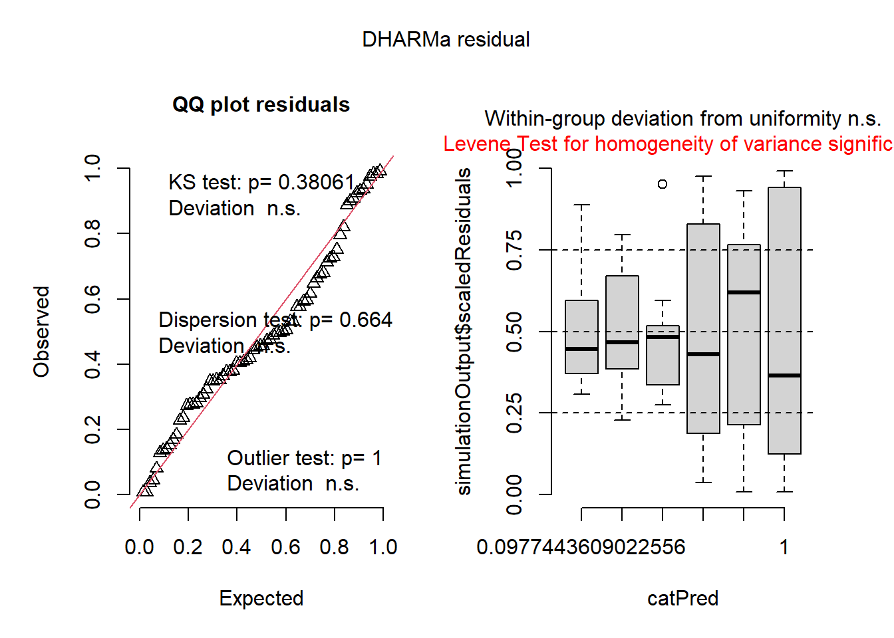

library(agricolae)
dates <- c(14,21,28)
dates[1] 14 21 28No programa R, os pacotes (ou “packages”) são conjuntos de funções, dados, e documentação que ampliam as capacidades básicas da linguagem. O R por si só já oferece muitas funcionalidades estatísticas, mas os pacotes permitem realizar tarefas mais específicas e avançadas, como análises estatísticas, visualizações, modelagens complexas, entre outras. Durantes as aulas da disciplina, foram utilizados uma diversidade de pacotes, que se diferiram de acordo com o tema e atividade da aula. Esses pacootes estão listados abaixo:
tidyverse: conjunto de pacotes integrados para importação, manipulação e visualização de dados de forma eficiente e moderna.
readxl: permite importar arquivos do Excel (.xlsx) diretamente para o R.
writexl: exporta data frames do R para arquivos Excel (.xlsx).
gsheet: importa dados de planilhas públicas do Google Sheets diretamente para o R.
janitor: limpa e padroniza dados, como nomes de colunas e detecção de linhas duplicadas ou faltantes.
DT: exibe tabelas interativas e dinâmicas em HTML dentro do RMarkdown ou Shiny.
ggthemes: adiciona temas visuais prontos e estilizados aos gráficos criados com ggplot2.
patchwork: permite combinar múltiplos gráficos feitos com ggplot2 em uma única visualização organizada.
ggpubr: facilita a criação de gráficos estatísticos publicáveis, adicionando testes de hipóteses e elementos gráficos com praticidade.
agricolae: realiza análises estatísticas voltadas à experimentação agrícola, como ANOVA, Tukey, Scott-Knott e DCA.
rstatix: oferece funções amigáveis para aplicar testes estatísticos (ANOVA, teste t, correlação, etc.) em dados tidy.
report: gera relatórios interpretáveis com explicações automatizadas dos resultados de testes e modelos.
car: fornece funções para diagnósticos e análises de regressão, como ANOVA tipo II/III e verificação de colinearidade (VIF).
emmeans: calcula médias ajustadas (médias marginais) e permite comparações entre níveis de fatores em modelos.
multcomp: realiza comparações múltiplas com controle de erro (ex: Tukey, Dunnett).
multcompView: gera letras indicativas de grupos estatisticamente diferentes para visualização em tabelas e gráficos.
lme4: ajusta modelos lineares mistos com efeitos fixos e aleatórios.
MASS: oferece funções para ajustes estatísticos clássicos, como regressão binomial negativa e modelos robustos.
DHARMa: simula resíduos e diagnostica suposições de modelos generalizados e mistos.
performance: avalia a qualidade de modelos estatísticos, calculando métricas como R², AIC, VIF e resíduos padronizados.
epifitter: ajusta modelos de progresso de doenças em plantas (logístico, gompertz, monomolecular) e calcula parâmetros epidemiológicos.
drc: ajusta curvas dose-resposta para estimar parâmetros como CL50 e CE50.
ec50estimator: estima valores de EC50 a partir de dados experimentais de forma automatizada.
rnaturalearth: fornece dados geográficos vetoriais de países, continentes e rios para criação de mapas com ggplot2.
install.packages("nome_do_pacote")
library(nome_do_pacote)
No inicio da utilização do R e começo das análises, utilizamos alguns pacotes. Esses pacotes nos ajudaram a organizar, manipular e analisar os dados de forma prática e eficiente. Nesta etapa inicial, vimos como criar vetores e data frames, e utilizar funções básicas aplicadas, como o cálculo da Área Abaixo da Curva de Progresso da Doença (AUDPC).
Abaixo contém alguns exemplos de utilização de pacotes:
library(agricolae)
dates <- c(14,21,28)
dates[1] 14 21 28severity <- c(40,80,90)
severity[1] 40 80 90audpc(severity, dates)evaluation
1015 data(corn)
str(corn)'data.frame': 34 obs. of 3 variables:
$ method : int 1 1 1 1 1 1 1 1 1 2 ...
$ observation: int 83 91 94 89 89 96 91 92 90 91 ...
$ rx : num 11 23 28.5 17 17 31.5 23 26 19.5 23 ...library(tidyverse)
dates <- c(7,14,21,28,35, 42)
severity <- c(0.1, 5, 10, 35, 50, 60)
data_curva <- data.frame(dates, severity)
data_curva dates severity
1 7 0.1
2 14 5.0
3 21 10.0
4 28 35.0
5 35 50.0
6 42 60.0As funções são blocos de código prontos que realizam tarefas específicas no R. Elas servem para automatizar processos, realizar cálculos, fazer testes estatísticos, gerar gráficos e muito mais. Sempre que digita algo como mean(), plot(), lm() ou aov(), está utilizando uma função. Geralmente, uma função recebe entradas (chamadas de argumentos), executa algum processamento com esses dados e retorna um resultado. Por exemplo, a função mean(x) calcula a média de um conjunto de valores armazenados em x.
No R, praticamente tudo é feito através de funções. Por isso, aprender a usá-las é essencial para conseguir analisar dados de forma prática, organizada e reprodutível. A seguir, tem as principais funções que foram usadas durante as aulas, separadas por finalidade.
attach(): torna as colunas de um data frame acessíveis diretamente pelo nome, sem precisar usar $. Deve ser usada com cautela, pois pode causar confusão se houver objetos com nomes iguais no ambiente.
detach(): desfaz o efeito do attach(), removendo o acesso direto às colunas do data frame.
mutate() (do pacote dplyr): cria novas colunas em um data frame ou modifica colunas existentes com base em expressões.
select() (dplyr): seleciona colunas específicas de um data frame, útil para reorganizar ou reduzir variáveis.
pull() (dplyr): extrai uma única coluna de um data frame como vetor.
rbind(): combina data frames ou vetores por linhas, empilhando os dados.
count() (dplyr): conta o número de ocorrências de cada categoria de uma variável.
gsheet2tbl() (do pacote gsheet): importa dados diretamente de uma planilha do Google Sheets para o R como data frame.
plot(): função genérica para fazer gráficos básicos (dispersão, linha, boxplot, etc.), dependendo do tipo de objeto fornecido.
ggplot() (do pacote ggplot2): inicia a construção de gráficos no estilo “Grammar of Graphics”, permitindo criar visualizações elegantes e altamente personalizáveis.
hist(): cria histogramas para visualizar a distribuição de variáveis numéricas.
qqnorm(): plota os quantis teóricos normais contra os quantis da amostra, usado para verificar se os dados seguem distribuição normal.
qqline(): adiciona uma linha de referência ao gráfico qqnorm() para facilitar a comparação com a normalidade.
interaction.plot(): cria gráficos de interação entre dois fatores, útil para visualização de efeitos cruzados em ANOVA.
var.test(): realiza o teste F para comparar variâncias entre dois grupos, usado antes de testes como t ou ANOVA.
shapiro.test(): aplica o teste de Shapiro-Wilk para verificar se os dados seguem distribuição normal.
bartlett.test(): testa a homogeneidade de variâncias entre grupos (pré-requisito da ANOVA).
leveneTest() (do pacote car): alternativa ao teste de Bartlett, menos sensível a desvios da normalidade, usada para verificar homocedasticidade.
cor(): calcula a correlação entre duas variáveis numéricas (por padrão, correlação de Pearson).
cor.test(): realiza o teste de correlação entre duas variáveis, retornando o valor-p e intervalo de confiança.
aov(): ajusta um modelo de análise de variância (ANOVA), usado para comparar médias entre três ou mais grupos.
anova(): realiza análise de variância em objetos de modelos (lm, aov, etc.) ou compara modelos ajustados.
lm(): ajusta modelos lineares simples ou múltiplos. Permite avaliar a relação entre uma variável resposta e uma ou mais variáveis preditoras.
kruskal.test(): teste de Kruskal-Wallis, alternativa não paramétrica à ANOVA, usado quando os dados não atendem aos pressupostos de normalidade ou homocedasticidade.
cld() (do pacote multcompView ou emmeans): gera letras indicando diferenças significativas entre grupos após ANOVA ou testes não paramétricos.
pwpm() (do pacote emmeans): apresenta a matriz de comparações par-a-par entre médias estimadas, indicando valores-p e letras significativas.
pairs(): exibe comparações múltiplas entre grupos após o ajuste de um modelo (aov, lm, etc.).
simulateResiduals() (do pacote DHARMa): simula resíduos de modelos estatísticos (como modelos lineares generalizados) para verificar normalidade, dispersão e independência dos resíduos.
cv.model() (do pacote performance ou função customizada): calcula o coeficiente de variação (CV), que mede a variabilidade relativa do modelo.
Abaixo contém alguns exemplos que foram utilizados em sala de aula:
dados <- Orange
dados2 <- dados
circ <- dados$circumference
circ [1] 30 58 87 115 120 142 145 33 69 111 156 172 203 203 30 51 75 108 115
[20] 139 140 32 62 112 167 179 209 214 30 49 81 125 142 174 177circ2 <- circ+10
circ2 [1] 40 68 97 125 130 152 155 43 79 121 166 182 213 213 40 61 85 118 125
[20] 149 150 42 72 122 177 189 219 224 40 59 91 135 152 184 187dados Grouped Data: circumference ~ age | Tree
Tree age circumference
1 1 118 30
2 1 484 58
3 1 664 87
4 1 1004 115
5 1 1231 120
6 1 1372 142
7 1 1582 145
8 2 118 33
9 2 484 69
10 2 664 111
11 2 1004 156
12 2 1231 172
13 2 1372 203
14 2 1582 203
15 3 118 30
16 3 484 51
17 3 664 75
18 3 1004 108
19 3 1231 115
20 3 1372 139
21 3 1582 140
22 4 118 32
23 4 484 62
24 4 664 112
25 4 1004 167
26 4 1231 179
27 4 1372 209
28 4 1582 214
29 5 118 30
30 5 484 49
31 5 664 81
32 5 1004 125
33 5 1231 142
34 5 1372 174
35 5 1582 177dados$logcirc <- log(dados$circumference)
dados$logcirc [1] 3.401197 4.060443 4.465908 4.744932 4.787492 4.955827 4.976734 3.496508
[9] 4.234107 4.709530 5.049856 5.147494 5.313206 5.313206 3.401197 3.931826
[17] 4.317488 4.682131 4.744932 4.934474 4.941642 3.465736 4.127134 4.718499
[25] 5.117994 5.187386 5.342334 5.365976 3.401197 3.891820 4.394449 4.828314
[33] 4.955827 5.159055 5.176150dados Grouped Data: circumference ~ age | Tree
Tree age circumference logcirc
1 1 118 30 3.401197
2 1 484 58 4.060443
3 1 664 87 4.465908
4 1 1004 115 4.744932
5 1 1231 120 4.787492
6 1 1372 142 4.955827
7 1 1582 145 4.976734
8 2 118 33 3.496508
9 2 484 69 4.234107
10 2 664 111 4.709530
11 2 1004 156 5.049856
12 2 1231 172 5.147494
13 2 1372 203 5.313206
14 2 1582 203 5.313206
15 3 118 30 3.401197
16 3 484 51 3.931826
17 3 664 75 4.317488
18 3 1004 108 4.682131
19 3 1231 115 4.744932
20 3 1372 139 4.934474
21 3 1582 140 4.941642
22 4 118 32 3.465736
23 4 484 62 4.127134
24 4 664 112 4.718499
25 4 1004 167 5.117994
26 4 1231 179 5.187386
27 4 1372 209 5.342334
28 4 1582 214 5.365976
29 5 118 30 3.401197
30 5 484 49 3.891820
31 5 664 81 4.394449
32 5 1004 125 4.828314
33 5 1231 142 4.955827
34 5 1372 174 5.159055
35 5 1582 177 5.176150dados$circumference [1] 30 58 87 115 120 142 145 33 69 111 156 172 203 203 30 51 75 108 115
[20] 139 140 32 62 112 167 179 209 214 30 49 81 125 142 174 177attach(dados)
circumference [1] 30 58 87 115 120 142 145 33 69 111 156 172 203 203 30 51 75 108 115
[20] 139 140 32 62 112 167 179 209 214 30 49 81 125 142 174 177detach (dados)plot(dados)plot(dados$circumference)data(corn)
str(corn)'data.frame': 34 obs. of 3 variables:
$ method : int 1 1 1 1 1 1 1 1 1 2 ...
$ observation: int 83 91 94 89 89 96 91 92 90 91 ...
$ rx : num 11 23 28.5 17 17 31.5 23 26 19.5 23 ...Antes de realizar qualquer análise, o primeiro passo é importar os dados para o software R. Esses dados podem estar em diferentes formatos, como planilhas do Excel, arquivos .csv, ou até mesmo em plataformas online como o Google Sheets. O R oferece diversas funções e pacotes que facilitam esse processo, permitindo que os dados sejam lidos de forma rápida, segura e estruturada. Dominar as formas de importação é fundamental para garantir que os dados cheguem prontos para análise, com os tipos corretos de variáveis e sem erros de leitura.
Abaixo contém alguns exemplos práticos de como importar dados de diferentes fontes usando funções específicas.
O R já possui diversos conjuntos de dados integrados, que podem ser utilizados para treinar comandos, testar funções ou praticar análises estatísticas. Esses dados são ideais para aprendizado, pois estão sempre disponíveis e já vêm formatados corretamente. Para utilizá-los, basta chamar o nome do conjunto de dados ou atribuí-lo a um objeto. Por exemplo, o dataset orange traz informações sobre o crescimento de laranjeiras, incluindo a circunferência do tronco ao longo do tempo.
dados <- Orange
OrangeGrouped Data: circumference ~ age | Tree
Tree age circumference
1 1 118 30
2 1 484 58
3 1 664 87
4 1 1004 115
5 1 1231 120
6 1 1372 142
7 1 1582 145
8 2 118 33
9 2 484 69
10 2 664 111
11 2 1004 156
12 2 1231 172
13 2 1372 203
14 2 1582 203
15 3 118 30
16 3 484 51
17 3 664 75
18 3 1004 108
19 3 1231 115
20 3 1372 139
21 3 1582 140
22 4 118 32
23 4 484 62
24 4 664 112
25 4 1004 167
26 4 1231 179
27 4 1372 209
28 4 1582 214
29 5 118 30
30 5 484 49
31 5 664 81
32 5 1004 125
33 5 1231 142
34 5 1372 174
35 5 1582 177plot(dados$circumference)
Além dos dados internos do R, é comum trabalhar com planilhas externas, como arquivos .xlsx do Excel. Para isso, utilizamos o pacote readxl, que permite importar planilhas de forma simples e eficiente.
Nos exemplos abaixo, carregamos planilhas de dados no Excel dados-diversos.xlsx:
library(tidyverse)
library(readxl)
dados3 <- read_excel("dados-diversos.xlsx",
sheet = "sensibilidade_fungicidas")
dados3# A tibble: 240 × 7
code year trial state dose replicate germination
<chr> <dbl> <dbl> <chr> <chr> <dbl> <dbl>
1 FGT05 2007 1 RS 0 1 46
2 FGT05 2007 1 RS 0 2 44
3 FGT05 2007 1 RS 0.05 1 18
4 FGT05 2007 1 RS 0.05 2 24
5 FGT05 2007 1 RS 0.5 1 9
6 FGT05 2007 1 RS 0.5 2 11
7 FGT05 2007 1 RS 1 1 0
8 FGT05 2007 1 RS 1 2 0
9 FGT05 2007 1 RS 5 1 0
10 FGT05 2007 1 RS 5 2 0
# ℹ 230 more rowsdados3 <- dados3 |>
mutate (dose = as.numeric(dose))str(dados)Classes 'nfnGroupedData', 'nfGroupedData', 'groupedData' and 'data.frame': 35 obs. of 3 variables:
$ Tree : Ord.factor w/ 5 levels "3"<"1"<"5"<"2"<..: 2 2 2 2 2 2 2 4 4 4 ...
$ age : num 118 484 664 1004 1231 ...
$ circumference: num 30 58 87 115 120 142 145 33 69 111 ...
- attr(*, "formula")=Class 'formula' language circumference ~ age | Tree
.. ..- attr(*, ".Environment")=<environment: R_EmptyEnv>
- attr(*, "labels")=List of 2
..$ x: chr "Time since December 31, 1968"
..$ y: chr "Trunk circumference"
- attr(*, "units")=List of 2
..$ x: chr "(days)"
..$ y: chr "(mm)"glimpse(dados2)Rows: 35
Columns: 3
$ Tree <ord> 1, 1, 1, 1, 1, 1, 1, 2, 2, 2, 2, 2, 2, 2, 3, 3, 3, 3, 3,…
$ age <dbl> 118, 484, 664, 1004, 1231, 1372, 1582, 118, 484, 664, 10…
$ circumference <dbl> 30, 58, 87, 115, 120, 142, 145, 33, 69, 111, 156, 172, 2…library(readxl)
read_excel("dados-diversos.xlsx",
sheet = "fungicida_vaso")# A tibble: 20 × 8
treat dose rep n_sp dis_sp n_seeds inf_seeds severity
<chr> <dbl> <dbl> <dbl> <dbl> <dbl> <dbl> <dbl>
1 Ionic liquid 0.5 1 103 13 25 10 0.126
2 Ionic liquid 0.5 2 125 31 25 12 0.248
3 Ionic liquid 0.5 3 210 80 25 12 0.381
4 Ionic liquid 0.5 4 97 28 25 10 0.289
5 Ionic liquid 0.5 5 180 75 25 11 0.417
6 Ionic liquid 2 2 116 9 25 6 0.0776
7 Ionic liquid 2 3 166 7 25 3 0.0422
8 Ionic liquid 2 4 157 12 25 1 0.0764
9 Ionic liquid 2 5 129 7 25 7 0.0543
10 Ionic liquid 2 1 84 0 25 1 0
11 Tebuconazole 0.5 1 121 0 25 2 0
12 Tebuconazole 0.5 2 123 6 25 5 0.0488
13 Tebuconazole 0.5 3 107 3 25 1 0.0280
14 Tebuconazole 0.5 4 90 0 25 2 0
15 Tebuconazole 0.5 5 142 4 25 1 0.0282
16 Tebuconazole 2 1 166 3 25 5 0.0181
17 Tebuconazole 2 2 120 0 25 2 0
18 Tebuconazole 2 3 100 4 25 2 0.04
19 Tebuconazole 2 4 96 3 25 0 0.0312
20 Tebuconazole 2 5 170 2 25 4 0.0118antifungicos <- read_excel("dados-diversos.xlsx",
sheet = "fungicida_vaso")
antifungicos# A tibble: 20 × 8
treat dose rep n_sp dis_sp n_seeds inf_seeds severity
<chr> <dbl> <dbl> <dbl> <dbl> <dbl> <dbl> <dbl>
1 Ionic liquid 0.5 1 103 13 25 10 0.126
2 Ionic liquid 0.5 2 125 31 25 12 0.248
3 Ionic liquid 0.5 3 210 80 25 12 0.381
4 Ionic liquid 0.5 4 97 28 25 10 0.289
5 Ionic liquid 0.5 5 180 75 25 11 0.417
6 Ionic liquid 2 2 116 9 25 6 0.0776
7 Ionic liquid 2 3 166 7 25 3 0.0422
8 Ionic liquid 2 4 157 12 25 1 0.0764
9 Ionic liquid 2 5 129 7 25 7 0.0543
10 Ionic liquid 2 1 84 0 25 1 0
11 Tebuconazole 0.5 1 121 0 25 2 0
12 Tebuconazole 0.5 2 123 6 25 5 0.0488
13 Tebuconazole 0.5 3 107 3 25 1 0.0280
14 Tebuconazole 0.5 4 90 0 25 2 0
15 Tebuconazole 0.5 5 142 4 25 1 0.0282
16 Tebuconazole 2 1 166 3 25 5 0.0181
17 Tebuconazole 2 2 120 0 25 2 0
18 Tebuconazole 2 3 100 4 25 2 0.04
19 Tebuconazole 2 4 96 3 25 0 0.0312
20 Tebuconazole 2 5 170 2 25 4 0.0118campo <- read_excel("dados-diversos.xlsx","fungicida_campo")
campo# A tibble: 32 × 5
TRAT BLOCO DFC FER PROD
<dbl> <dbl> <dbl> <dbl> <dbl>
1 1 1 10 17 4611.
2 1 2 10.5 21 4312.
3 1 3 12 25 4544.
4 1 4 11 18 3409.
5 2 1 6.2 6.5 5023.
6 2 2 6 4 4839.
7 2 3 7 8 4903.
8 2 4 6.5 5 4975.
9 3 1 6 6 5235.
10 3 2 6.2 3.5 5014.
# ℹ 22 more rowsmilho <- read_excel("dados-diversos.xlsx","milho")
milho# A tibble: 48 × 5
hybrid block method index yield
<chr> <dbl> <chr> <dbl> <dbl>
1 30F53 HX 1 pin 21.1 12920
2 30F53 HX 2 pin 21.1 9870
3 30F53 HX 3 pin 23.3 8920
4 30F53 HX 4 pin 35.6 13120
5 30F53 YH 1 pin 21.1 12060
6 30F53 YH 2 pin 22.2 7860
7 30F53 YH 3 pin 27.3 7410
8 30F53 YH 4 pin 27.8 10300
9 30K64 1 pin 20.0 11700
10 30K64 2 pin 20.0 10700
# ℹ 38 more rowsO formato .csv (Comma-Separated Values) é amplamente utilizado para armazenar dados em tabelas simples, sendo compatível com diversos programas como Excel, LibreOffice e Google Sheets. No R, utilizamos a função read_csv() do pacote readr para importar arquivos .csv. Também podemos exportar dados para esse formato usando a função write_csv() do pacote writexl, o que é útil para salvar e compartilhar os resultados da análise.
curve <- read_csv("curve.csv")
library(writexl)
write_csv(curve, "curve.csv")O pacote gsheet também permite importar várias planilhas diretamente da nuvem. Isso é especialmente útil em situações onde os dados estão organizados em diferentes abas ou arquivos no Google Drive, como em experimentos com diferentes tratamentos, localidades ou avaliações. No exemplo abaixo, utilizamos a função gsheet2tbl() repetidamente para importar conjuntos de dados distintos a partir de seus links públicos. Cada objeto (dados_mg, survey, micelia1, dat_mg, etc.) representa uma tabela específica contida em uma aba do Google Sheets:
library(gsheet)
dados_mg <- gsheet2tbl("https://docs.google.com/spreadsheets/d/1bq2N19DcZdtax2fQW9OHSGMR0X2__Z9T/edit?gid=983033137#gid=983033137")
dados_mg# A tibble: 20 × 3
trat rep comp
<chr> <dbl> <dbl>
1 Mg2 1 9
2 Mg2 2 12.5
3 Mg2 3 10
4 Mg2 4 8
5 Mg2 5 13.2
6 Mg2 6 11
7 Mg2 7 10.8
8 Mg2 8 9.5
9 Mg2 9 10.8
10 Mg2 10 10.4
11 control 1 13.7
12 control 2 15.9
13 control 3 15.7
14 control 4 14.2
15 control 5 15.9
16 control 6 16.5
17 control 7 18
18 control 8 14.4
19 control 9 16.4
20 control 10 16 survey <- gsheet2tbl("https://docs.google.com/spreadsheets/d/1bq2N19DcZdtax2fQW9OHSGMR0X2__Z9T/edit?gid=1118819738#gid=1118819738")
survey# A tibble: 666 × 6
year state residue inc inc_class species
<dbl> <chr> <chr> <dbl> <chr> <chr>
1 2011 RS soybean 1 low Fgra
2 2011 RS soybean 1 low Fgra
3 2011 RS soybean 1 low Fgra
4 2011 RS soybean 1 low Fgra
5 2011 RS soybean 1 low Fgra
6 2011 RS soybean 1 low Fgra
7 2011 RS corn 1 low Fgra
8 2010 RS soybean 2 low Fspp
9 2010 RS corn 2 low Fgra
10 2011 RS soybean 2 low Fgra
# ℹ 656 more rowsmg <- gsheet2tbl("https://docs.google.com/spreadsheets/d/1bq2N19DcZdtax2fQW9OHSGMR0X2__Z9T/edit?gid=983033137#gid=983033137")
mg# A tibble: 20 × 3
trat rep comp
<chr> <dbl> <dbl>
1 Mg2 1 9
2 Mg2 2 12.5
3 Mg2 3 10
4 Mg2 4 8
5 Mg2 5 13.2
6 Mg2 6 11
7 Mg2 7 10.8
8 Mg2 8 9.5
9 Mg2 9 10.8
10 Mg2 10 10.4
11 control 1 13.7
12 control 2 15.9
13 control 3 15.7
14 control 4 14.2
15 control 5 15.9
16 control 6 16.5
17 control 7 18
18 control 8 14.4
19 control 9 16.4
20 control 10 16 micelial <- gsheet2tbl("https://docs.google.com/spreadsheets/d/1bq2N19DcZdtax2fQW9OHSGMR0X2__Z9T/edit?gid=959387827#gid=959387827")
micelial# A tibble: 30 × 3
especie rep tcm
<chr> <dbl> <dbl>
1 Fasi 1 1.5
2 Fasi 2 1.59
3 Fasi 3 1.52
4 Fasi 4 1.52
5 Fasi 5 1.6
6 Fasi 6 1.7
7 Faus 1 1.52
8 Faus 2 1.25
9 Faus 3 1.27
10 Faus 4 1.3
# ℹ 20 more rowsdat_mg <- gsheet2tbl("https://docs.google.com/spreadsheets/d/1bq2N19DcZdtax2fQW9OHSGMR0X2__Z9T/edit?gid=983033137#gid=983033137")
dat_mg# A tibble: 20 × 3
trat rep comp
<chr> <dbl> <dbl>
1 Mg2 1 9
2 Mg2 2 12.5
3 Mg2 3 10
4 Mg2 4 8
5 Mg2 5 13.2
6 Mg2 6 11
7 Mg2 7 10.8
8 Mg2 8 9.5
9 Mg2 9 10.8
10 Mg2 10 10.4
11 control 1 13.7
12 control 2 15.9
13 control 3 15.7
14 control 4 14.2
15 control 5 15.9
16 control 6 16.5
17 control 7 18
18 control 8 14.4
19 control 9 16.4
20 control 10 16 escala <- gsheet2tbl("https://docs.google.com/spreadsheets/d/1bq2N19DcZdtax2fQW9OHSGMR0X2__Z9T/edit?gid=1729131173#gid=1729131173")
escala# A tibble: 20 × 7
assessment rater acuracia precisao vies_geral vies_sistematico vies_constante
<chr> <chr> <dbl> <dbl> <dbl> <dbl> <dbl>
1 Unaided A 0.81 0.83 0.98 1.19 0.11
2 Unaided B 0.72 0.73 0.99 0.92 -0.11
3 Unaided C 0.4 0.71 0.78 1.16 0.73
4 Unaided D 0.82 0.82 1 0.95 -0.01
5 Unaided E 0.75 0.75 0.99 1.1 0.07
6 Unaided F 0.45 0.75 0.92 0.8 0.34
7 Unaided G 0.81 0.82 0.98 1.16 0.13
8 Unaided H 0.78 0.87 0.9 1.07 -0.47
9 Unaided I 0.78 0.79 0.99 1.14 0.09
10 Unaided J 0.5 0.83 0.74 0.65 -0.72
11 Aided1 A 0.91 0.95 0.96 0.89 -0.28
12 Aided1 B 0.91 0.96 0.95 0.89 -0.3
13 Aided1 C 0.91 0.96 0.95 1.28 0.21
14 Aided1 D 0.96 0.97 0.99 1.14 0.09
15 Aided1 E 0.96 0.96 1 1 -0.1
16 Aided1 F 0.9 0.97 0.93 0.86 -0.36
17 Aided1 G 0.85 0.95 0.89 0.83 -0.45
18 Aided1 H 0.88 0.97 0.9 1.29 0.38
19 Aided1 I 0.95 0.96 0.99 1.14 0.07
20 Aided1 J 0.94 0.96 0.99 0.91 -0.13micelial <- gsheet2tbl("https://docs.google.com/spreadsheets/d/1bq2N19DcZdtax2fQW9OHSGMR0X2__Z9T/edit?gid=959387827#gid=959387827")
micelial# A tibble: 30 × 3
especie rep tcm
<chr> <dbl> <dbl>
1 Fasi 1 1.5
2 Fasi 2 1.59
3 Fasi 3 1.52
4 Fasi 4 1.52
5 Fasi 5 1.6
6 Fasi 6 1.7
7 Faus 1 1.52
8 Faus 2 1.25
9 Faus 3 1.27
10 Faus 4 1.3
# ℹ 20 more rowsestande <- gsheet2tbl("https://docs.google.com/spreadsheets/d/1bq2N19DcZdtax2fQW9OHSGMR0X2__Z9T/edit?gid=401662555#gid=401662555")
estande# A tibble: 72 × 4
exp trat bloco nplants
<dbl> <dbl> <dbl> <dbl>
1 1 0 1 66
2 1 0 2 72
3 1 0 3 50
4 1 0 4 27
5 1 3 1 68
6 1 3 2 79
7 1 3 3 31
8 1 3 4 32
9 1 6 1 58
10 1 6 2 56
# ℹ 62 more rowsfungi <- gsheet2tbl("https://docs.google.com/spreadsheets/d/1bq2N19DcZdtax2fQW9OHSGMR0X2__Z9T/edit?gid=465348652#gid=465348652")
fungi# A tibble: 240 × 9
code year trial state dose replicate germination ...8 ...9
<chr> <dbl> <dbl> <chr> <dbl> <dbl> <dbl> <lgl> <lgl>
1 FGT05 2007 1 RS 0 1 46 NA NA
2 FGT05 2007 1 RS 0 2 44 NA NA
3 FGT05 2007 1 RS 0.05 1 18 NA NA
4 FGT05 2007 1 RS 0.05 2 24 NA NA
5 FGT05 2007 1 RS 0.5 1 9 NA NA
6 FGT05 2007 1 RS 0.5 2 11 NA NA
7 FGT05 2007 1 RS 1 1 0 NA NA
8 FGT05 2007 1 RS 1 2 0 NA NA
9 FGT05 2007 1 RS 5 1 0 NA NA
10 FGT05 2007 1 RS 5 2 0 NA NA
# ℹ 230 more rowscr <- gsheet2tbl("https://docs.google.com/spreadsheets/d/1bq2N19DcZdtax2fQW9OHSGMR0X2__Z9T/edit?gid=1871397229#gid=1871397229")
cr# A tibble: 405 × 13
farm region zone district lon lat altitude cultivar shade
<dbl> <chr> <chr> <chr> <dbl> <dbl> <dbl> <chr> <chr>
1 1 SNNPR Bench Maji Debub Bench 35.4 6.90 1100 Local Sun
2 2 SNNPR Bench Maji Debub Bench 35.4 6.90 1342 Mixture Mid shade
3 3 SNNPR Bench Maji Debub Bench 35.4 6.90 1434 Mixture Mid shade
4 4 SNNPR Bench Maji Debub Bench 35.4 6.90 1100 Local Sun
5 5 SNNPR Bench Maji Debub Bench 35.4 6.90 1400 Local Sun
6 6 SNNPR Bench Maji Debub Bench 35.4 6.90 1342 Mixture Mid shade
7 7 SNNPR Bench Maji Debub Bench 35.4 6.90 1432 Mixture Mid shade
8 8 SNNPR Bench Maji Debub Bench 35.4 6.90 1100 Local Sun
9 9 SNNPR Bench Maji Debub Bench 35.4 6.89 1400 Local Sun
10 10 SNNPR Bench Maji Debub Bench 35.4 6.88 1342 Mixture Mid shade
# ℹ 395 more rows
# ℹ 4 more variables: cropping_system <chr>, farm_management <chr>, inc <dbl>,
# sev2 <dbl>Após importar os dados, é comum precisar organizá-los para facilitar a análise. Isso pode incluir tarefas como selecionar variáveis, filtrar observações específicas, juntar tabelas ou contar combinações de variáveis. Essas operações são chamadas de manipulação de dados, e no R, utilizamos principalmente o pacote dplyr para isso. Com uma sintaxe simples e eficiente, ele permite trabalhar de forma clara e encadeada por meio do operador pipe (|>).
No chuck de código abaixo realiza uma contagem de combinações entre as variáveis state e residue no data frame survey. Primeiro, os dados são agrupados por estado e tipo de resíduo com group_by(state, residue). Em seguida, count() contabiliza quantas observações existem em cada grupo.
survey |>
group_by(state, residue) |>
count()# A tibble: 3 × 3
# Groups: state, residue [3]
state residue n
<chr> <chr> <int>
1 PR <NA> 216
2 RS corn 169
3 RS soybean 281Nesse chunck de código, está realizando uma filtragem dos dados do data frame survey com base na coluna state. Ela separa os dados de dois estados diferentes: O objeto RS recebe apenas os dados do estado do Rio Grande do Sul ("RS"). O objeto PR recebe somente os dados do Paraná ("PR").
Essa etapa é útil quando queremos analisar os dados de forma individual por estado, como comparar resultados, fazer gráficos separados ou aplicar testes estatísticos específicos para cada região.
RS <- survey |>
filter(state == "RS")
PR <- survey |>
filter(state == "PR")Esse trecho de código está juntando dois data frames (RS e PR) em um único conjunto de dados chamado combinado, utilizando a função rbind(). A função rbind() (“row-bind”). Em seguida, rbind() une essas duas tabelas em uma única, chamada combinado, mantendo todas as observações. Essa abordagem é útil quando queremos reunir os dados segmentados novamente, seja para análises comparativas, geração de gráficos ou modelagens mais amplas.
combinado <- rbind(RS, PR)Esse trecho de código está juntando dois data frames (RS e PR) em um único conjunto de dados chamado combinado, utilizando a função rbind(). A função rbind() (“row-bind”) concatena linhas de dois ou mais data frames que possuem a mesma estrutura de colunas. Neste caso: Os dados dos estados do Rio Grande do Sul (RS) e do Paraná (PR) foram previamente filtrados. Agora, rbind() une essas duas tabelas em uma única, chamada combinado, mantendo todas as observações. Essa abordagem é útil quando queremos reunir os dados segmentados novamente, seja para análises comparativas, geração de gráficos ou modelagens mais amplas.
survey_b <- survey |>
dplyr::select(year, state, species)survey_2009 <- survey |>
dplyr::select(year, state, species) |>
filter(year == 2009)Esse trecho de código está criando uma tabela de contingência entre os valores das variáveis year e species utilizando a função tabyl() do pacote janitor. A função tabyl() permite gerar rapidamente tabelas de frequência cruzadas (também chamadas de tabelas de dupla entrada) de forma simples e clara: year define as linhas da tabela. species define as colunas da tabela. O resultado mostra quantas observações de cada espécie ocorreram em cada ano. É uma maneira eficiente de explorar e resumir dados categóricos.
library(janitor)
survey_b |>
tabyl(year,species) year Fgra Fspp
2009 225 40
2010 187 29
2011 140 45Já no exemplo abaixo, transformamos os dados de um formato longo (onde cada linha representa uma medição de um tratamento) para um formato largo, no qual cada coluna representa um tratamento específico. Essa transformação foi feita com a função pivot_wider(), utilizando as colunas trat como nomes de colunas e comp como valores. Em seguida, removemos a coluna rep, que indicava a repetição, com a função select(-rep). Esse tipo de estrutura é útil para comparar diretamente os valores dos tratamentos lado a lado.
library(tidyverse)
dat_mg2 <- dat_mg |>
pivot_wider(names_from = trat, values_from = comp) |>
dplyr::select(-"rep")
dat_mg2# A tibble: 10 × 2
Mg2 control
<dbl> <dbl>
1 9 13.7
2 12.5 15.9
3 10 15.7
4 8 14.2
5 13.2 15.9
6 11 16.5
7 10.8 18
8 9.5 14.4
9 10.8 16.4
10 10.4 16 No R, uma das formas mais poderosas e flexíveis de criar gráficos é utilizando o pacote ggplot2, que faz parte do tidyverse. Com ggplot2, podemos construir gráficos em camadas (layer by layer), o que permite personalizações detalhadas e a criação de visualizações claras e informativas. A lógica do ggplot2 é baseada na gramática dos gráficos, onde você define: os dados a serem utilizados, o mapeamento estético (eixos, cores, tamanhos, etc.), e as camadas geométricas que representarão os dados (como pontos, linhas ou colunas).
Usado para: Comparar categorias ou grupos.
Funções:
barplot() (base R)
geom_bar() (contagens automáticas com ggplot2)
geom_col() (valores definidos)
Usado para: Exibir tendências ao longo do tempo.
Funções:
plot(…, type = “l”) (base R)
geom_line() (ggplot2)
Usado para: Visualizar a relação entre duas variáveis numéricas.
Funções:
plot(x, y) (base R)
geom_point() (ggplot2)
Usado para: Visualizar a distribuição de dados (mediana, quartis, outliers).
Funções:
boxplot() (base R)
geom_boxplot() (ggplot2)
Usado para: Ver a frequência de valores contínuos.
Funções:
hist() (base R)
geom_histogram() (ggplot2)
Usado para: Mostrar proporções ou variações acumuladas ao longo do tempo.
Funções:
geom_area() (ggplot2)
Usado para: Mostrar proporções de categorias (menos recomendado em análises técnicas).
Funções:
pie() (base R)
Usado para: Comparar composição de grupos.
Funções:
geom_bar(position = “stack”) (ggplot2)
geom_bar(position = “fill”) para proporções
Usado para: Visualizar a densidade da distribuição dos dados com formato semelhante ao boxplot.
Funções:
geom_violin() (ggplot2)
Usado para: Criar vários gráficos por subgrupo automaticamente.
Funções:
facet_wrap(~variável) ou facet_grid() (ggplot2)
Abaixo contém alguns dos gráficos que foram realizados durante as aulas:
data_curva |>
mutate(severity2 = c(1, 10, 35, 58, 70, 79)) |>
ggplot(aes(dates, severity2))+
geom_col()+
#geom_area(fill = "blue")+
geom_line(linewidth = 2, color = "black")+
geom_point(size = 4, color = "black")+
theme_bw(base_size = 14)+
labs(x = "Dia após o plantio",
y = "Severidade (%)")+
scale_y_continuous(limits = c(0, 100), n.breaks = 10) +
scale_x_continuous(n.breaks = 8)data_curva |>
mutate(severity2 = c(1, 10, 35, 58, 70, 79)) |>
ggplot(aes(dates, severity2))+
geom_col()+
geom_area(fill = "blue")+
geom_line(linewidth = 2, color = "black")+
geom_point(size = 4, color = "black")+
theme_bw(base_size = 14)+
labs(x = "Dia após o plantio",
y = "Severidade (%)")+
scale_y_continuous(limits = c(0, 100), n.breaks = 10) +
scale_x_continuous(n.breaks = 8)survey_b |>
group_by(year, species) |>
count() |>
ggplot(aes(species,n))+
geom_col()+
facet_wrap(~year)survey_b |>
group_by(year, species) |>
count() |>
ggplot(aes(year,n, fill = species,
color = species))+
geom_col()+
# scal_fill_manual(values = c("red", "blue"))+
# scale_fill_grey()+
scale_color_viridis_d()# facet_wrap(~year)survey_b |>
group_by(year, species) |>
count() |>
ggplot(aes(year,n, fill = species,
color = species))+
geom_col()+
scale_fill_manual(values = c("red", "blue"))+
# scale_fill_grey()+
scale_color_viridis_d()# facet_wrap(~year)survey_b |>
group_by(year, species) |>
count() |>
ggplot(aes(year,n, fill = species,
color = species))+
geom_col()+
# scal_fill_manual(values = c("red", "blue"))+
scale_fill_grey()+
scale_color_viridis_d()# facet_wrap(~year)survey_b |>
group_by(year, species) |>
count() |>
ggplot(aes(year,n, fill = species,
color = species))+
geom_col()+
# scal_fill_manual(values = c("red", "blue"))+
# scale_fill_grey()+
scale_color_viridis_d()+
facet_wrap(~year)library(ggthemes)
plot_mg <- mg |>
ggplot(aes(trat, comp))+
geom_boxplot(fill = "grey",
outlier.colour = NA)+
geom_jitter(width = 0.1, color = "grey20")+
scale_y_continuous(limits = c(5,20))+
labs(x = "Tratamento",
y = "Comprimento (mm)")+
theme_minimal()
plot_mg
ggsave("box.png", bg = "white", width = 5,
height = 5)plot_micelial <- micelial |>
ggplot(aes(reorder(especie, tcm),tcm))+
geom_boxplot(fill = "darkgreen",
outlier.colour = NA)+
geom_jitter(width = 0.1, color = "grey20")+
scale_y_continuous(limits = c(0,2))+
labs(x = "", y = "Taxa de crescimento micelial (mm/dia)")+
theme_minimal()+
coord_flip()
plot_micelialdat_mg# A tibble: 20 × 3
trat rep comp
<chr> <dbl> <dbl>
1 Mg2 1 9
2 Mg2 2 12.5
3 Mg2 3 10
4 Mg2 4 8
5 Mg2 5 13.2
6 Mg2 6 11
7 Mg2 7 10.8
8 Mg2 8 9.5
9 Mg2 9 10.8
10 Mg2 10 10.4
11 control 1 13.7
12 control 2 15.9
13 control 3 15.7
14 control 4 14.2
15 control 5 15.9
16 control 6 16.5
17 control 7 18
18 control 8 14.4
19 control 9 16.4
20 control 10 16 dat_mg |>
ggplot(aes(trat,comp))+
geom_jitter(width = 0.1)library(ggpubr)
p <- ggboxplot(
dat_mg, x = "trat", y = "comp",
color = "trat", palette = "jco")
plibrary(rstatix)
test <- t_test(comp ~ trat, data = dat_mg)
test# A tibble: 1 × 8
.y. group1 group2 n1 n2 statistic df p
* <chr> <chr> <chr> <int> <int> <dbl> <dbl> <dbl>
1 comp control Mg2 10 10 8.15 17.4 0.000000242p + stat_pvalue_manual(test, label = "p",
y.position = 18)+
ylim(0,20)+
labs(x = "Tratamento",
y = "Comprimento da lesão (mm)")Ao trabalhar com visualizações em R, muitas vezes é útil apresentar dois ou mais gráficos lado a lado para facilitar comparações ou contar uma história visual mais completa. O pacote patchwork facilita essa tarefa, permitindo combinar gráficos criados com ggplot2 de forma intuitiva e elegante. A função | posiciona os gráficos lado a lado na horizontal, enquanto + permite empilhá-los verticalmente. No exemplo (plot_mg | plot_micelial) + plot_annotation(tag_levels = "a"), dois gráficos (plot_mg e plot_micelial) são combinados horizontalmente e recebem etiquetas automáticas (“a”, “b”, etc.) com a função plot_annotation. Essa abordagem é especialmente útil para gerar figuras mais organizadas e comparativas em relatórios ou apresentações científicas.
library(patchwork)
(plot_mg | plot_micelial) +
plot_annotation(tag_levels = "a")Após criar um gráfico com ggplot2, é possível salvá-lo diretamente como imagem usando a função ggsave(), do próprio pacote. Essa função permite exportar gráficos para diversos formatos, como .png, .pdf e .jpg, facilitando sua inclusão em apresentações, artigos ou relatórios. Por padrão, ggsave() salva o último gráfico gerado, mas também pode receber um objeto gráfico como argumento. É possível definir o nome do arquivo, o tamanho da imagem (width e height) e a cor de fundo (bg). Por exemplo:
ggsave("box.png", bg = "white", width = 5, height = 5) salva uma imagem quadrada com fundo branco;
ggsave("comb.png", bg = "white", width = 8, height = 4) salva uma figura retangular, ideal para gráficos combinados;
ggsave("plot2.png", bg = "white") salva o gráfico com dimensões padrão.
Essa é uma prática essencial para documentar e compartilhar visualizações com qualidade e controle sobre o formato.
ggsave("box.png", bg = "white", width = 5,
height = 5)
ggsave("comb.png", bg = "white",
width = 8, height = 4)
ggsave("plot2.png", bg = "white")O R é uma linguagem de programação e ambiente de software amplamente utilizado para computação estatística e gráficos. Sua flexibilidade e vasta coleção de pacotes (bibliotecas) tornam-no uma ferramenta indispensável para análises estatísticas, desde a exploração inicial de dados e visualizações complexas até a modelagem estatística avançada, como regressão, análise de variância e métodos multivariados. A capacidade do R de manipular, processar e visualizar grandes conjuntos de dados, aliada à sua natureza de código aberto e comunidade ativa, permite que pesquisadores e analistas desenvolvam e apliquem metodologias estatísticas rigorosas para extrair insights significativos e embasar a tomada de decisões em diversas áreas do conhecimento. Durante a aula foram realizadas diversas análises estatísticas que serão demostrasdas abaixo:
O teste t é uma das análises estatísticas mais utilizadas para comparar médias entre dois grupos e verificar se a diferença observada entre eles é estatisticamente significativa. No R, essa análise pode ser realizada com a função t.test(), que permite testar tanto amostras independentes quanto pareadas (dependentes), além de definir se a variância dos grupos deve ser considerada igual ou não. O teste retorna informações importantes como valor-p, estatística t, intervalos de confiança e estimativas das médias. Essa abordagem é essencial para avaliar diferenças entre tratamentos, genótipos, condições experimentais ou qualquer outra situação comparativa entre dois grupos. Por sua simplicidade e poder, o teste t é frequentemente o ponto de partida para análises estatísticas em experimentos científicos.
No exemplo a seguir, utilizamos a função t.test() para realizar um teste t entre dois grupos: control e Mg2, presentes no conjunto de dados dat_mg2. Para isso, aplicamos attach(dat_mg2) — o que facilita o acesso direto às variáveis contidas no objeto. O argumento var.equal = FALSE indica que as variâncias dos dois grupos não são iguais (teste t de Welch, mais robusto em muitos casos). O resultado é armazenado no objeto t_results. Em seguida, com o auxílio do pacote report, utilizamos report(t_results) para gerar um resumo interpretativo e amigável da análise, incluindo valor-p, estimativa da diferença entre médias, intervalo de confiança e recomendação de interpretação estatística. Essa abordagem une precisão estatística com clareza na comunicação dos resultados.
attach(dat_mg2)
t_results <- t.test(control, Mg2,
var.equal = FALSE)
library(report)
report(t_results)Effect sizes were labelled following Cohen's (1988) recommendations.
The Welch Two Sample t-test testing the difference between control and Mg2
(mean of x = 15.68, mean of y = 10.52) suggests that the effect is positive,
statistically significant, and large (difference = 5.16, 95% CI [3.83, 6.49],
t(17.35) = 8.15, p < .001; Cohen's d = 3.65, 95% CI [2.14, 5.12])Essa é outra alternativa para o test t no R. Utilizamos a função t_test() do pacote rstatix para comparar as médias da variável comp entre os grupos definidos em trat. Essa função é prática, retorna o valor-p, a estatística t, e o intervalo de confiança, tudo em um formato limpo e fácil de interpretar.
library(rstatix)
test <- t_test(comp ~ trat, data = dat_mg)
test# A tibble: 1 × 8
.y. group1 group2 n1 n2 statistic df p
* <chr> <chr> <chr> <int> <int> <dbl> <dbl> <dbl>
1 comp control Mg2 10 10 8.15 17.4 0.000000242Antes de aplicar muitos testes estatísticos, especialmente os chamados testes paramétricos (como o teste t e a ANOVA), é fundamental verificar se os dados seguem uma distribuição normal. Isso porque esses testes assumem que os dados têm um comportamento simétrico em torno da média. No R, o teste de normalidade mais utilizado é o teste de Shapiro-Wilk, acessado pela função shapiro.test(). Esse teste retorna um valor-p que indica se há evidências contra a normalidade dos dados. Um valor-p maior que 0,05 sugere que os dados não diferem significativamente de uma distribuição normal (ou seja, a normalidade pode ser assumida). Essa verificação é essencial para escolher corretamente os testes estatísticos a serem aplicados.
Para verificar se os dados do grupo Mg2 seguem uma distribuição normal, aplicamos o teste de Shapiro-Wilk com a função shapiro.test(Mg2). O resultado do teste fornece um valor de estatística W e um valor-p. Se o valor-p for maior que 0,05, podemos assumir que os dados têm distribuição normal, o que permite o uso de testes paramétricos como o teste t ou ANOVA. Caso o valor-p seja menor que 0,05, significa que os dados se desviam da normalidade, e testes não paramétricos podem ser mais apropriados. Esse teste é simples, rápido e essencial em análises exploratórias iniciais.
shapiro.test(Mg2)
Shapiro-Wilk normality test
data: Mg2
W = 0.97269, p-value = 0.9146shapiro.test(control)
Shapiro-Wilk normality test
data: control
W = 0.93886, p-value = 0.5404hist(dat_mg2$Mg2)hist(control)var.test(dat_mg2$Mg2,
dat_mg2$control)
F test to compare two variances
data: dat_mg2$Mg2 and dat_mg2$control
F = 1.4781, num df = 9, denom df = 9, p-value = 0.5698
alternative hypothesis: true ratio of variances is not equal to 1
95 percent confidence interval:
0.3671417 5.9508644
sample estimates:
ratio of variances
1.478111 O teste t para amostras dependentes (ou teste t pareado) é utilizado quando os dois conjuntos de dados estão relacionados, ou seja, as observações de um grupo têm correspondência direta com as do outro. Isso é comum em experimentos antes e depois, em medidas repetidas no mesmo indivíduo ou em tratamentos aplicados na mesma unidade experimental. No R, usamos a função t.test(x, y, paired = TRUE) para esse tipo de análise. O argumento paired = TRUE informa que as amostras são dependentes. Esse teste compara a diferença entre os pares de observações e verifica se a média dessas diferenças é significativamente diferente de zero. É uma forma robusta de análise quando há relação entre os grupos, reduzindo a variabilidade e aumentando o poder do teste.
Abaixo são demostrados dois exemplos:
Exemplo 1
escala# A tibble: 20 × 7
assessment rater acuracia precisao vies_geral vies_sistematico vies_constante
<chr> <chr> <dbl> <dbl> <dbl> <dbl> <dbl>
1 Unaided A 0.81 0.83 0.98 1.19 0.11
2 Unaided B 0.72 0.73 0.99 0.92 -0.11
3 Unaided C 0.4 0.71 0.78 1.16 0.73
4 Unaided D 0.82 0.82 1 0.95 -0.01
5 Unaided E 0.75 0.75 0.99 1.1 0.07
6 Unaided F 0.45 0.75 0.92 0.8 0.34
7 Unaided G 0.81 0.82 0.98 1.16 0.13
8 Unaided H 0.78 0.87 0.9 1.07 -0.47
9 Unaided I 0.78 0.79 0.99 1.14 0.09
10 Unaided J 0.5 0.83 0.74 0.65 -0.72
11 Aided1 A 0.91 0.95 0.96 0.89 -0.28
12 Aided1 B 0.91 0.96 0.95 0.89 -0.3
13 Aided1 C 0.91 0.96 0.95 1.28 0.21
14 Aided1 D 0.96 0.97 0.99 1.14 0.09
15 Aided1 E 0.96 0.96 1 1 -0.1
16 Aided1 F 0.9 0.97 0.93 0.86 -0.36
17 Aided1 G 0.85 0.95 0.89 0.83 -0.45
18 Aided1 H 0.88 0.97 0.9 1.29 0.38
19 Aided1 I 0.95 0.96 0.99 1.14 0.07
20 Aided1 J 0.94 0.96 0.99 0.91 -0.13t_test(acuracia ~ assessment,
data = escala,
paired = TRUE)# A tibble: 1 × 8
.y. group1 group2 n1 n2 statistic df p
* <chr> <chr> <chr> <int> <int> <dbl> <dbl> <dbl>
1 acuracia Aided1 Unaided 10 10 4.42 9 0.00167escala |>
ggplot(aes(assessment, acuracia))+
geom_boxplot()
O teste de Wilcoxon é uma alternativa não paramétrica ao teste t, usado quando os dados não seguem uma distribuição normal. Ele pode ser aplicado tanto para amostras independentes (wilcox.test(x, y)) quanto para amostras pareadas (wilcox.test(x, y, paired = TRUE)). Em vez de comparar médias, como o teste t, o Wilcoxon compara as posições (ou postos) dos valores, tornando-o mais robusto para dados assimétricos ou com outliers. Esse teste é ideal em análises onde a suposição de normalidade não é atendida, garantindo resultados confiáveis mesmo com dados não ideais. É muito utilizado em estudos biológicos, agronômicos e de ciências aplicadas quando se busca uma alternativa mais segura aos testes paramétricos tradicionais.
A Análise de Variância (ANOVA) é uma técnica estatística usada para verificar se existem diferenças significativas entre três ou mais médias de grupos. Ao invés de comparar pares de médias isoladamente, como no teste t, a ANOVA avalia se pelo menos um grupo difere significativamente dos demais com base na variação dos dados. No R, a função aov() permite aplicar o modelo de ANOVA, geralmente combinada com summary() para visualizar os resultados. Se o valor-p do teste for menor que 0,05, rejeita-se a hipótese de que todas as médias são iguais. No entanto, a ANOVA apenas indica que há diferenças — para saber quais grupos diferem entre si, é necessário aplicar testes de comparações múltiplas (como Tukey ou Dunnett). A ANOVA é amplamente utilizada em experimentos agrícolas, biomédicos e nas ciências sociais por sua capacidade de lidar com vários tratamentos ao mesmo tempo.
micelial# A tibble: 30 × 3
especie rep tcm
<chr> <dbl> <dbl>
1 Fasi 1 1.5
2 Fasi 2 1.59
3 Fasi 3 1.52
4 Fasi 4 1.52
5 Fasi 5 1.6
6 Fasi 6 1.7
7 Faus 1 1.52
8 Faus 2 1.25
9 Faus 3 1.27
10 Faus 4 1.3
# ℹ 20 more rowsmicelial |>
ggplot(aes(especie, tcm))+
geom_boxplot(oulier.colour = NA)+
geom_jitter(width = 0.1)
anova1 <- aov(tcm ~especie, data = micelial)
anova1Call:
aov(formula = tcm ~ especie, data = micelial)
Terms:
especie Residuals
Sum of Squares 1.4695800 0.4679167
Deg. of Freedom 4 25
Residual standard error: 0.1368089
Estimated effects may be unbalancedanova2 <- lm(tcm ~ especie, data = micelial)
anova2
Call:
lm(formula = tcm ~ especie, data = micelial)
Coefficients:
(Intercept) especieFaus especieFcor especieFgra especieFmer
1.572 -0.335 -0.250 -0.660 -0.145 anova(anova1)Analysis of Variance Table
Response: tcm
Df Sum Sq Mean Sq F value Pr(>F)
especie 4 1.46958 0.36739 19.629 2.028e-07 ***
Residuals 25 0.46792 0.01872
---
Signif. codes: 0 '***' 0.001 '**' 0.01 '*' 0.05 '.' 0.1 ' ' 1anova(anova2)Analysis of Variance Table
Response: tcm
Df Sum Sq Mean Sq F value Pr(>F)
especie 4 1.46958 0.36739 19.629 2.028e-07 ***
Residuals 25 0.46792 0.01872
---
Signif. codes: 0 '***' 0.001 '**' 0.01 '*' 0.05 '.' 0.1 ' ' 1A Análise de Variância (ANOVA) é uma ferramenta estatística poderosa, mas sua aplicação e a validade de suas conclusões dependem de certas premissas que devem ser atendidas pelos dados. A primeira é a normalidade dos resíduos: assume-se que os resíduos (as diferenças entre os valores observados e os valores preditos pelo modelo) seguem uma distribuição normal. Em seguida, temos a homocedasticidade, ou seja, a igualdade das variâncias dos grupos que estão sendo comparados. Por fim, a independência das observações é crucial, garantindo que a medida de uma observação não seja influenciada ou dependente da medida de outra. A violação dessas premissas pode levar a inferências incorretas, sendo importante verificá-las antes de interpretar os resultados da ANOVA.
hist(residuals(anova1))histfunction (x, ...)
UseMethod("hist")
<bytecode: 0x000001ab4e103aa8>
<environment: namespace:graphics>shapiro.test(residuals(anova1))
Shapiro-Wilk normality test
data: residuals(anova1)
W = 0.9821, p-value = 0.8782bartlett.test(tcm ~ especie, data = micelial)
Bartlett test of homogeneity of variances
data: tcm by especie
Bartlett's K-squared = 4.4367, df = 4, p-value = 0.3501levene_test(tcm ~ especie, data = micelial)# A tibble: 1 × 4
df1 df2 statistic p
<int> <int> <dbl> <dbl>
1 4 25 1.76 0.169A Análise de Agrupamento, ou Cluster Analysis, é um conjunto de técnicas multivariadas exploratórias utilizadas para organizar dados em grupos (ou clusters) com base em sua similaridade. O objetivo principal é que os objetos dentro de um mesmo grupo sejam o mais parecidos possível entre si, enquanto sejam o mais dissimilares possível dos objetos em outros grupos. Diferente de outras técnicas estatísticas, a análise de agrupamento não exige um conhecimento prévio sobre a afiliação dos objetos a grupos específicos. Abaixo contém dois exemplos:
library(emmeans)
m <- emmeans(anova2, ~ especie)
m especie emmean SE df lower.CL upper.CL
Fasi 1.572 0.0559 25 1.457 1.69
Faus 1.237 0.0559 25 1.122 1.35
Fcor 1.322 0.0559 25 1.207 1.44
Fgra 0.912 0.0559 25 0.797 1.03
Fmer 1.427 0.0559 25 1.312 1.54
Confidence level used: 0.95 library(multcomp)
library(multcompView)
cld(m) especie emmean SE df lower.CL upper.CL .group
Fgra 0.912 0.0559 25 0.797 1.03 1
Faus 1.237 0.0559 25 1.122 1.35 2
Fcor 1.322 0.0559 25 1.207 1.44 2
Fmer 1.427 0.0559 25 1.312 1.54 23
Fasi 1.572 0.0559 25 1.457 1.69 3
Confidence level used: 0.95
P value adjustment: tukey method for comparing a family of 5 estimates
significance level used: alpha = 0.05
NOTE: If two or more means share the same grouping symbol,
then we cannot show them to be different.
But we also did not show them to be the same. pairs(m) contrast estimate SE df t.ratio p.value
Fasi - Faus 0.335 0.079 25 4.241 0.0023
Fasi - Fcor 0.250 0.079 25 3.165 0.0302
Fasi - Fgra 0.660 0.079 25 8.356 <.0001
Fasi - Fmer 0.145 0.079 25 1.836 0.3765
Faus - Fcor -0.085 0.079 25 -1.076 0.8169
Faus - Fgra 0.325 0.079 25 4.115 0.0031
Faus - Fmer -0.190 0.079 25 -2.405 0.1469
Fcor - Fgra 0.410 0.079 25 5.191 0.0002
Fcor - Fmer -0.105 0.079 25 -1.329 0.6761
Fgra - Fmer -0.515 0.079 25 -6.520 <.0001
P value adjustment: tukey method for comparing a family of 5 estimates pwpm(m) Fasi Faus Fcor Fgra Fmer
Fasi [1.572] 0.0023 0.0302 <.0001 0.3765
Faus 0.335 [1.237] 0.8169 0.0031 0.1469
Fcor 0.250 -0.085 [1.322] 0.0002 0.6761
Fgra 0.660 0.325 0.410 [0.912] <.0001
Fmer 0.145 -0.190 -0.105 -0.515 [1.427]
Row and column labels: especie
Upper triangle: P values adjust = "tukey"
Diagonal: [Estimates] (emmean)
Lower triangle: Comparisons (estimate) earlier vs. laterinsetos <- InsectSprays
insetos count spray
1 10 A
2 7 A
3 20 A
4 14 A
5 14 A
6 12 A
7 10 A
8 23 A
9 17 A
10 20 A
11 14 A
12 13 A
13 11 B
14 17 B
15 21 B
16 11 B
17 16 B
18 14 B
19 17 B
20 17 B
21 19 B
22 21 B
23 7 B
24 13 B
25 0 C
26 1 C
27 7 C
28 2 C
29 3 C
30 1 C
31 2 C
32 1 C
33 3 C
34 0 C
35 1 C
36 4 C
37 3 D
38 5 D
39 12 D
40 6 D
41 4 D
42 3 D
43 5 D
44 5 D
45 5 D
46 5 D
47 2 D
48 4 D
49 3 E
50 5 E
51 3 E
52 5 E
53 3 E
54 6 E
55 1 E
56 1 E
57 3 E
58 2 E
59 6 E
60 4 E
61 11 F
62 9 F
63 15 F
64 22 F
65 15 F
66 16 F
67 13 F
68 10 F
69 26 F
70 26 F
71 24 F
72 13 Finsetos |>
ggplot(aes(spray, count))+
geom_boxplot(outlier.colour = NA)+
geom_jitter(width = 0.1)bartlett.test(sqrt(count) ~ spray, data = insetos)
Bartlett test of homogeneity of variances
data: sqrt(count) by spray
Bartlett's K-squared = 3.7525, df = 5, p-value = 0.5856m2 <- lm(sqrt(count) ~ spray, data = insetos)
m2
Call:
lm(formula = sqrt(count) ~ spray, data = insetos)
Coefficients:
(Intercept) sprayB sprayC sprayD sprayE sprayF
3.7607 0.1160 -2.5158 -1.5963 -1.9512 0.2579 hist(residuals(m2))shapiro.test(residuals(m2))
Shapiro-Wilk normality test
data: residuals(m2)
W = 0.98721, p-value = 0.6814qqnorm(residuals(m2))qqnorm(residuals(m2))
qqline(residuals(m2))
library(performance)
check_model(m2)library(DHARMa)
m2
Call:
lm(formula = sqrt(count) ~ spray, data = insetos)
Coefficients:
(Intercept) sprayB sprayC sprayD sprayE sprayF
3.7607 0.1160 -2.5158 -1.5963 -1.9512 0.2579 plot(simulateResiduals(m2))
Quando os dados violam os pressupostos da ANOVA, como a normalidade ou homocedasticidade, existem alternativas. Testes não paramétricos, como o Kruskal-Wallis, são ideais por não exigirem distribuição normal. Transformações de dados (logarítmica, raiz quadrada) também podem ajudar a adequar os dados. Além disso, a ANOVA robusta e os Modelos Lineares Generalizados (GLMs) oferecem abordagens mais flexíveis para garantir inferências válidas.
A transformação da resposta é uma técnica estatística que aplica uma função matemática (como logaritmo, raiz quadrada ou Box-Cox) aos dados da variável dependente (resposta) para que eles atendam aos pressupostos de testes paramétricos, como a ANOVA. Isso é útil quando os dados não apresentam normalidade ou homogeneidade de variâncias (homocedasticidade). Ao transformar os dados, podemos estabilizar a variância, tornar a distribuição mais simétrica e, assim, validar o uso da ANOVA para obter resultados mais precisos e confiáveis.
O comando a seguir ajusta um modelo de regressão linear (a função lm significa “linear model”). O sqrt(count) indica que a variável resposta (count) foi transformada pela raiz quadrada. Isso sugere que a variável count original pode ter tido problemas de normalidade ou homocedasticidade, e a transformação foi aplicada para tentar resolver isso. ~ spray: Indica que spray é a variável preditora (independente). O data = insetos especifica que as variáveis count e spray estão no conjunto de dados chamado insetos.
m3 <- lm(sqrt(count) ~ spray, data = insetos)
m3
Call:
lm(formula = sqrt(count) ~ spray, data = insetos)
Coefficients:
(Intercept) sprayB sprayC sprayD sprayE sprayF
3.7607 0.1160 -2.5158 -1.5963 -1.9512 0.2579 hist(residuals(m3))shapiro.test(...): Realiza o teste de Shapiro-Wilk de normalidade. Este é um teste estatístico formal para avaliar se uma amostra de dados veio de uma distribuição normal. A hipótese nula (H0) do teste de Shapiro-Wilk é que os dados são normalmente distribuídos. Um p-valor baixo (geralmente menor que 0.05) indicaria evidência para rejeitar H0, sugerindo que os resíduos não são normalmente distribuídos. Um p-valor alto indicaria que não há evidência suficiente para rejeitar H0, ou seja, os resíduos podem ser considerados normais.
shapiro.test(residuals(m3))
Shapiro-Wilk normality test
data: residuals(m3)
W = 0.98721, p-value = 0.6814qqnorm(...): Cria um gráfico Q-Q normal (quantile-quantile plot) dos resíduos. Este gráfico é outra ferramenta visual para verificar a normalidade dos resíduos. Se os pontos no gráfico se alinharem aproximadamente ao longo de uma linha reta diagonal, isso sugere que os resíduos são normalmente distribuídos. Desvios significativos da linha indicam não-normalidade.
qqnorm(residuals(m3))
Adiciona uma linha de referência ao gráfico Q-Q normal que foi gerado pelo comando qqnorm(residuals(m3)) na imagem anterior. Essa linha ajuda a visualizar quão bem os pontos do gráfico Q-Q se ajustam a uma distribuição normal. Se os pontos seguem de perto a linha, isso reforça a ideia de normalidade dos resíduos.
anova(...): Realiza uma Análise de Variância (ANOVA) para o modelo linear m3. Este comando irá gerar uma tabela ANOVA, que mostra a significância da variável preditora (spray) na explicação da variabilidade da variável resposta (sqrt(count)). Você verá os quadrados médios, F-estatística e o p-valor associado, indicando se há diferença significativa entre os níveis de spray.
anova(m3)Analysis of Variance Table
Response: sqrt(count)
Df Sum Sq Mean Sq F value Pr(>F)
spray 5 88.438 17.6876 44.799 < 2.2e-16 ***
Residuals 66 26.058 0.3948
---
Signif. codes: 0 '***' 0.001 '**' 0.01 '*' 0.05 '.' 0.1 ' ' 1emmeans(...): Significa “estimated marginal means” (médias marginais estimadas). Esta função, geralmente do pacote emmeans, calcula as médias ajustadas (ou médias dos mínimos quadrados) para cada nível da variável spray, considerando o modelo m3.
m33 <- emmeans(m3, ~spray, type = "response")
m33 spray response SE df lower.CL upper.CL
A 14.14 1.360 66 11.550 17.00
B 15.03 1.410 66 12.352 17.97
C 1.55 0.452 66 0.779 2.58
D 4.68 0.785 66 3.248 6.38
E 3.27 0.656 66 2.095 4.72
F 16.15 1.460 66 13.370 19.19
Confidence level used: 0.95
Intervals are back-transformed from the sqrt scale cld(...): Significa “compact letter display” (exibição de letras compactas). Esta função, também do pacote emmeans ou similar, é usada para realizar testes de comparação múltipla (por exemplo, Tukey HSD, Bonferroni, etc., dependendo da configuração padrão ou especificação). Ela atribui letras aos grupos, onde grupos que compartilham a mesma letra não são significativamente diferentes entre si, e grupos com letras diferentes são significativamente diferentes. Isso facilita a visualização de quais níveis de spray diferem uns dos outros após a análise ANOVA.
cld(m33) spray response SE df lower.CL upper.CL .group
C 1.55 0.452 66 0.779 2.58 1
E 3.27 0.656 66 2.095 4.72 12
D 4.68 0.785 66 3.248 6.38 2
A 14.14 1.360 66 11.550 17.00 3
B 15.03 1.410 66 12.352 17.97 3
F 16.15 1.460 66 13.370 19.19 3
Confidence level used: 0.95
Intervals are back-transformed from the sqrt scale
Note: contrasts are still on the sqrt scale. Consider using
regrid() if you want contrasts of back-transformed estimates.
P value adjustment: tukey method for comparing a family of 6 estimates
significance level used: alpha = 0.05
NOTE: If two or more means share the same grouping symbol,
then we cannot show them to be different.
But we also did not show them to be the same. plot(m33)A Transformação Box-Cox é uma ferramenta inteligente que nos ajuda a “ajustar” os dados de uma variável para que eles se comportem de maneira mais adequada para certos testes estatísticos. Imagine que seus dados estão um pouco “tortos” ou com variabilidades muito diferentes entre si. Isso pode atrapalhar a análise. A Box-Cox trabalha descobrindo qual tipo de “ajuste” matemático (como elevar os números a uma certa potência, ou tirar o logaritmo, ou a raiz quadrada, etc.) fará com que esses dados se tornem mais simétricos (parecendo uma “curva de sino” normal) e com variabilidades mais parecidas entre os grupos.
library(MASS)
insects <- InsectSpraysm1 <- lm(count ~ spray, data = insects)library(DHARMa)
plot(simulateResiduals(m1))
boxcox(lm(insects$count + 0.1 ~ 1))
b <- boxcox(lm(insects$count + 0.1 ~ 1))
lambda <- b$x[which.max(b$y)]
lambda[1] 0.4242424library(tidyverse)
Insects <- insects |>
mutate(count = as.numeric(count),
count3 = sqrt(count))
Insects count spray count3
1 10 A 3.162278
2 7 A 2.645751
3 20 A 4.472136
4 14 A 3.741657
5 14 A 3.741657
6 12 A 3.464102
7 10 A 3.162278
8 23 A 4.795832
9 17 A 4.123106
10 20 A 4.472136
11 14 A 3.741657
12 13 A 3.605551
13 11 B 3.316625
14 17 B 4.123106
15 21 B 4.582576
16 11 B 3.316625
17 16 B 4.000000
18 14 B 3.741657
19 17 B 4.123106
20 17 B 4.123106
21 19 B 4.358899
22 21 B 4.582576
23 7 B 2.645751
24 13 B 3.605551
25 0 C 0.000000
26 1 C 1.000000
27 7 C 2.645751
28 2 C 1.414214
29 3 C 1.732051
30 1 C 1.000000
31 2 C 1.414214
32 1 C 1.000000
33 3 C 1.732051
34 0 C 0.000000
35 1 C 1.000000
36 4 C 2.000000
37 3 D 1.732051
38 5 D 2.236068
39 12 D 3.464102
40 6 D 2.449490
41 4 D 2.000000
42 3 D 1.732051
43 5 D 2.236068
44 5 D 2.236068
45 5 D 2.236068
46 5 D 2.236068
47 2 D 1.414214
48 4 D 2.000000
49 3 E 1.732051
50 5 E 2.236068
51 3 E 1.732051
52 5 E 2.236068
53 3 E 1.732051
54 6 E 2.449490
55 1 E 1.000000
56 1 E 1.000000
57 3 E 1.732051
58 2 E 1.414214
59 6 E 2.449490
60 4 E 2.000000
61 11 F 3.316625
62 9 F 3.000000
63 15 F 3.872983
64 22 F 4.690416
65 15 F 3.872983
66 16 F 4.000000
67 13 F 3.605551
68 10 F 3.162278
69 26 F 5.099020
70 26 F 5.099020
71 24 F 4.898979
72 13 F 3.605551insects$count2 <- (insects$count ^ lambda - 1) / lambdahist(insects$count)
Um teste não paramétrico é um tipo de teste estatístico que não exige que os dados sigam uma distribuição específica (como a distribuição normal). Diferentemente dos testes paramétricos (como a ANOVA), que assumem certas características da população (parâmetros), os testes não paramétricos são mais flexíveis e não fazem essas suposições rigorosas sobre a forma da distribuição dos dados ou a homogeneidade das variâncias.
Eles são particularmente úteis quando:
Os dados não atendem aos pressupostos dos testes paramétricos (por exemplo, falta de normalidade ou homocedasticidade).
A amostra é pequena.
Os dados são ordinais (categorias com uma ordem, mas sem intervalos iguais) ou nominais (categorias sem ordem).
Exemplos comuns de testes não paramétricos incluem o Teste de Kruskal-Wallis (alternativa à ANOVA para múltiplos grupos), o Teste de Mann-Whitney U (alternativa ao teste t de Student para dois grupos independentes) e o Teste de Wilcoxon (alternativa ao teste t pareado).
kruskal.test(count ~ spray, data = insetos)
Kruskal-Wallis rank sum test
data: count by spray
Kruskal-Wallis chi-squared = 54.691, df = 5, p-value = 1.511e-10Pode ser feito pelo pacote rstatix.
library(rstatix)
kruskal_test(insetos, count ~spray)# A tibble: 1 × 6
.y. n statistic df p method
* <chr> <int> <dbl> <int> <dbl> <chr>
1 count 72 54.7 5 1.51e-10 Kruskal-WallisOu pelo pacote agrocolae.
library(agricolae)
kruskal(insetos$count, insetos$spray, group = TRUE,
console = TRUE)
Study: insetos$count ~ insetos$spray
Kruskal-Wallis test's
Ties or no Ties
Critical Value: 54.69134
Degrees of freedom: 5
Pvalue Chisq : 1.510845e-10
insetos$spray, means of the ranks
insetos.count r
A 52.16667 12
B 54.83333 12
C 11.45833 12
D 25.58333 12
E 19.33333 12
F 55.62500 12
Post Hoc Analysis
t-Student: 1.996564
Alpha : 0.05
Minimum Significant Difference: 8.462804
Treatments with the same letter are not significantly different.
insetos$count groups
F 55.62500 a
B 54.83333 a
A 52.16667 a
D 25.58333 b
E 19.33333 bc
C 11.45833 cModelos Lineares Generalizados (GLMs) são uma extensão poderosa dos modelos de regressão linear tradicionais. Enquanto a regressão linear padrão assume que a variável resposta (dependente) tem uma distribuição normal e que a relação entre a resposta e os preditores é linear, os GLMs são “generalizados” porque flexibilizam essas duas suposições principais.
Um GLM permite:
Variáveis Resposta com Diferentes Distribuições: A variável resposta não precisa ser normalmente distribuída. GLMs podem lidar com respostas que seguem distribuições como Poisson (para contagens), Binomial (para proporções ou dados binários), Gama, entre outras.
Funções de Ligação (Link Function): A relação entre a média da variável resposta e os preditores não precisa ser diretamente linear. Em vez disso, uma “função de ligação” (link function) é usada para transformar a média da resposta para uma escala onde a relação é linear. Por exemplo, para dados de contagem, o logaritmo da média pode ser modelado linearmente.
Isso torna os GLMs extremamente versáteis para analisar uma ampla gama de tipos de dados, especialmente quando os pressupostos dos modelos lineares clássicos são violados. Eles são amplamente utilizados em diversas áreas, como biologia, epidemiologia e economia.
m4 <- glm(count ~ spray, data = insetos,
family = poisson)
m4
Call: glm(formula = count ~ spray, family = poisson, data = insetos)
Coefficients:
(Intercept) sprayB sprayC sprayD sprayE sprayF
2.67415 0.05588 -1.94018 -1.08152 -1.42139 0.13926
Degrees of Freedom: 71 Total (i.e. Null); 66 Residual
Null Deviance: 409
Residual Deviance: 98.33 AIC: 376.6anova(m4)Analysis of Deviance Table
Model: poisson, link: log
Response: count
Terms added sequentially (first to last)
Df Deviance Resid. Df Resid. Dev Pr(>Chi)
NULL 71 409.04
spray 5 310.71 66 98.33 < 2.2e-16 ***
---
Signif. codes: 0 '***' 0.001 '**' 0.01 '*' 0.05 '.' 0.1 ' ' 1library(car)
Anova(m4)Analysis of Deviance Table (Type II tests)
Response: count
LR Chisq Df Pr(>Chisq)
spray 310.71 5 < 2.2e-16 ***
---
Signif. codes: 0 '***' 0.001 '**' 0.01 '*' 0.05 '.' 0.1 ' ' 1library(DHARMa)
plot(simulateResiduals(m4))
medias_m4 <- emmeans(m4, ~ spray, type = "response")
medias_m4 spray rate SE df asymp.LCL asymp.UCL
A 14.50 1.100 Inf 12.50 16.82
B 15.33 1.130 Inf 13.27 17.72
C 2.08 0.417 Inf 1.41 3.08
D 4.92 0.640 Inf 3.81 6.35
E 3.50 0.540 Inf 2.59 4.74
F 16.67 1.180 Inf 14.51 19.14
Confidence level used: 0.95
Intervals are back-transformed from the log scale library(multcomp)
library(multcompView)
cld(medias_m4) spray rate SE df asymp.LCL asymp.UCL .group
C 2.08 0.417 Inf 1.41 3.08 1
E 3.50 0.540 Inf 2.59 4.74 12
D 4.92 0.640 Inf 3.81 6.35 2
A 14.50 1.100 Inf 12.50 16.82 3
B 15.33 1.130 Inf 13.27 17.72 3
F 16.67 1.180 Inf 14.51 19.14 3
Confidence level used: 0.95
Intervals are back-transformed from the log scale
P value adjustment: tukey method for comparing a family of 6 estimates
Tests are performed on the log scale
significance level used: alpha = 0.05
NOTE: If two or more means share the same grouping symbol,
then we cannot show them to be different.
But we also did not show them to be the same. A ANOVA Fatorial é uma extensão da Análise de Variância (ANOVA) que permite examinar simultaneamente o efeito de duas ou mais variáveis independentes categóricas (chamadas de “fatores”) sobre uma única variável dependente quantitativa. A principal vantagem da ANOVA Fatorial é que ela não apenas testa o efeito de cada fator individualmente (chamado de efeito principal), mas também a interação entre eles. Uma interação ocorre quando o efeito de um fator sobre a variável dependente muda dependendo do nível de outro fator.
antifungicos# A tibble: 20 × 8
treat dose rep n_sp dis_sp n_seeds inf_seeds severity
<chr> <dbl> <dbl> <dbl> <dbl> <dbl> <dbl> <dbl>
1 Ionic liquid 0.5 1 103 13 25 10 0.126
2 Ionic liquid 0.5 2 125 31 25 12 0.248
3 Ionic liquid 0.5 3 210 80 25 12 0.381
4 Ionic liquid 0.5 4 97 28 25 10 0.289
5 Ionic liquid 0.5 5 180 75 25 11 0.417
6 Ionic liquid 2 2 116 9 25 6 0.0776
7 Ionic liquid 2 3 166 7 25 3 0.0422
8 Ionic liquid 2 4 157 12 25 1 0.0764
9 Ionic liquid 2 5 129 7 25 7 0.0543
10 Ionic liquid 2 1 84 0 25 1 0
11 Tebuconazole 0.5 1 121 0 25 2 0
12 Tebuconazole 0.5 2 123 6 25 5 0.0488
13 Tebuconazole 0.5 3 107 3 25 1 0.0280
14 Tebuconazole 0.5 4 90 0 25 2 0
15 Tebuconazole 0.5 5 142 4 25 1 0.0282
16 Tebuconazole 2 1 166 3 25 5 0.0181
17 Tebuconazole 2 2 120 0 25 2 0
18 Tebuconazole 2 3 100 4 25 2 0.04
19 Tebuconazole 2 4 96 3 25 0 0.0312
20 Tebuconazole 2 5 170 2 25 4 0.0118interaction.plot(antifungicos$treat, antifungicos$dose, antifungicos$severity)p1 <- antifungicos |>
ggplot(aes(factor(dose), severity*100))+
geom_jitter(width = 0.1)
p1p2 <- antifungicos |>
ggplot(aes(factor(treat), severity*100))+
geom_jitter(width = 0.1)library(ggplot2)
antifungicos |>
ggplot(aes(factor(dose), severity*100))+
geom_jitter(width = 0.1)+
facet_wrap(~ treat)m_anti <- lm(severity ~ treat*dose, data = antifungicos)
m_anti
Call:
lm(formula = severity ~ treat * dose, data = antifungicos)
Coefficients:
(Intercept) treatTebuconazole dose
0.3728 -0.3515 -0.1613
treatTebuconazole:dose
0.1608 anova(m_anti)Analysis of Variance Table
Response: severity
Df Sum Sq Mean Sq F value Pr(>F)
treat 1 0.113232 0.113232 30.358 4.754e-05 ***
dose 1 0.073683 0.073683 19.755 0.0004077 ***
treat:dose 1 0.072739 0.072739 19.502 0.0004326 ***
Residuals 16 0.059678 0.003730
---
Signif. codes: 0 '***' 0.001 '**' 0.01 '*' 0.05 '.' 0.1 ' ' 1library(DHARMa)
plot(simulateResiduals(m_anti))library(emmeans)
media_anti <- emmeans(m_anti, ~ dose | treat)
media_antitreat = Ionic liquid:
dose emmean SE df lower.CL upper.CL
0.5 0.2921 0.0273 16 0.23420 0.3500
2.0 0.0501 0.0273 16 -0.00781 0.1080
treat = Tebuconazole:
dose emmean SE df lower.CL upper.CL
0.5 0.0210 0.0273 16 -0.03690 0.0789
2.0 0.0202 0.0273 16 -0.03768 0.0781
Confidence level used: 0.95 cld(media_anti)treat = Ionic liquid:
dose emmean SE df lower.CL upper.CL .group
2.0 0.0501 0.0273 16 -0.00781 0.1080 1
0.5 0.2921 0.0273 16 0.23420 0.3500 2
treat = Tebuconazole:
dose emmean SE df lower.CL upper.CL .group
2.0 0.0202 0.0273 16 -0.03768 0.0781 1
0.5 0.0210 0.0273 16 -0.03690 0.0789 1
Confidence level used: 0.95
significance level used: alpha = 0.05
NOTE: If two or more means share the same grouping symbol,
then we cannot show them to be different.
But we also did not show them to be the same. library(agricolae)
cv.model(m_anti)[1] 63.7165| 0.5 | 2.0 | |
|---|---|---|
| LI | 29.2 Aa | 5 Ab |
| Tebu | 2.1 Ba | 2 Aa |
| CV = 63% |
library(epifitter)
oidio <- PowderyMildew
oidio irrigation_type moisture block time sev
1 Drip High moisture 1 0 0.011
2 Drip High moisture 2 0 0.011
3 Drip High moisture 3 0 0.011
4 Drip High moisture 1 7 0.034
5 Drip High moisture 2 7 0.040
6 Drip High moisture 3 7 0.036
7 Drip High moisture 1 14 0.114
8 Drip High moisture 2 14 0.109
9 Drip High moisture 3 14 0.097
10 Drip High moisture 1 21 0.126
11 Drip High moisture 2 21 0.120
12 Drip High moisture 3 21 0.103
13 Drip High moisture 1 28 0.160
14 Drip High moisture 2 28 0.149
15 Drip High moisture 3 28 0.149
16 Drip High moisture 1 35 0.183
17 Drip High moisture 2 35 0.189
18 Drip High moisture 3 35 0.171
19 Drip High moisture 1 42 0.297
20 Drip High moisture 2 42 0.331
21 Drip High moisture 3 42 0.343
22 Drip High moisture 1 49 0.331
23 Drip High moisture 2 49 0.366
24 Drip High moisture 3 49 0.366
25 Drip High moisture 1 56 0.389
26 Drip High moisture 2 56 0.457
27 Drip High moisture 3 56 0.411
28 Drip High moisture 1 63 0.434
29 Drip High moisture 2 63 0.434
30 Drip High moisture 3 63 0.434
31 MS High moisture 1 0 0.005
32 MS High moisture 2 0 0.007
33 MS High moisture 3 0 0.008
34 MS High moisture 1 7 0.017
35 MS High moisture 2 7 0.024
36 MS High moisture 3 7 0.014
37 MS High moisture 1 14 0.051
38 MS High moisture 2 14 0.074
39 MS High moisture 3 14 0.046
40 MS High moisture 1 21 0.061
41 MS High moisture 2 21 0.089
42 MS High moisture 3 21 0.056
43 MS High moisture 1 28 0.069
44 MS High moisture 2 28 0.070
45 MS High moisture 3 28 0.066
46 MS High moisture 1 35 0.089
47 MS High moisture 2 35 0.100
48 MS High moisture 3 35 0.091
49 MS High moisture 1 42 0.171
50 MS High moisture 2 42 0.229
51 MS High moisture 3 42 0.211
52 MS High moisture 1 49 0.211
53 MS High moisture 2 49 0.234
54 MS High moisture 3 49 0.229
55 MS High moisture 1 56 0.297
56 MS High moisture 2 56 0.320
57 MS High moisture 3 56 0.297
58 MS High moisture 1 63 0.366
59 MS High moisture 2 63 0.354
60 MS High moisture 3 63 0.331
61 MS Moderate moisture 1 0 0.009
62 MS Moderate moisture 2 0 0.009
63 MS Moderate moisture 3 0 0.009
64 MS Moderate moisture 1 7 0.028
65 MS Moderate moisture 2 7 0.025
66 MS Moderate moisture 3 7 0.021
67 MS Moderate moisture 1 14 0.077
68 MS Moderate moisture 2 14 0.080
69 MS Moderate moisture 3 14 0.071
70 MS Moderate moisture 1 21 0.056
71 MS Moderate moisture 2 21 0.086
72 MS Moderate moisture 3 21 0.071
73 MS Moderate moisture 1 28 0.103
74 MS Moderate moisture 2 28 0.109
75 MS Moderate moisture 3 28 0.097
76 MS Moderate moisture 1 35 0.137
77 MS Moderate moisture 2 35 0.143
78 MS Moderate moisture 3 35 0.149
79 MS Moderate moisture 1 42 0.229
80 MS Moderate moisture 2 42 0.269
81 MS Moderate moisture 3 42 0.309
82 MS Moderate moisture 1 49 0.309
83 MS Moderate moisture 2 49 0.297
84 MS Moderate moisture 3 49 0.354
85 MS Moderate moisture 1 56 0.354
86 MS Moderate moisture 2 56 0.411
87 MS Moderate moisture 3 56 0.389
88 MS Moderate moisture 1 63 0.411
89 MS Moderate moisture 2 63 0.400
90 MS Moderate moisture 3 63 0.400
91 Furrow Moderate moisture 1 0 0.010
92 Furrow Moderate moisture 2 0 0.010
93 Furrow Moderate moisture 3 0 0.010
94 Furrow Moderate moisture 1 7 0.036
95 Furrow Moderate moisture 2 7 0.036
96 Furrow Moderate moisture 3 7 0.040
97 Furrow Moderate moisture 1 14 0.097
98 Furrow Moderate moisture 2 14 0.097
99 Furrow Moderate moisture 3 14 0.114
100 Furrow Moderate moisture 1 21 0.114
101 Furrow Moderate moisture 2 21 0.097
102 Furrow Moderate moisture 3 21 0.103
103 Furrow Moderate moisture 1 28 0.149
104 Furrow Moderate moisture 2 28 0.166
105 Furrow Moderate moisture 3 28 0.154
106 Furrow Moderate moisture 1 35 0.183
107 Furrow Moderate moisture 2 35 0.194
108 Furrow Moderate moisture 3 35 0.194
109 Furrow Moderate moisture 1 42 0.343
110 Furrow Moderate moisture 2 42 0.377
111 Furrow Moderate moisture 3 42 0.343
112 Furrow Moderate moisture 1 49 0.377
113 Furrow Moderate moisture 2 49 0.389
114 Furrow Moderate moisture 3 49 0.377
115 Furrow Moderate moisture 1 56 0.400
116 Furrow Moderate moisture 2 56 0.411
117 Furrow Moderate moisture 3 56 0.434
118 Furrow Moderate moisture 1 63 0.457
119 Furrow Moderate moisture 2 63 0.457
120 Furrow Moderate moisture 3 63 0.434
121 MS above canopy High moisture 1 0 0.007
122 MS above canopy High moisture 2 0 0.009
123 MS above canopy High moisture 3 0 0.006
124 MS above canopy High moisture 1 7 0.013
125 MS above canopy High moisture 2 7 0.014
126 MS above canopy High moisture 3 7 0.011
127 MS above canopy High moisture 1 14 0.019
128 MS above canopy High moisture 2 14 0.018
129 MS above canopy High moisture 3 14 0.016
130 MS above canopy High moisture 1 21 0.040
131 MS above canopy High moisture 2 21 0.043
132 MS above canopy High moisture 3 21 0.046
133 MS above canopy High moisture 1 28 0.041
134 MS above canopy High moisture 2 28 0.050
135 MS above canopy High moisture 3 28 0.049
136 MS above canopy High moisture 1 35 0.044
137 MS above canopy High moisture 2 35 0.053
138 MS above canopy High moisture 3 35 0.054
139 MS above canopy High moisture 1 42 0.083
140 MS above canopy High moisture 2 42 0.089
141 MS above canopy High moisture 3 42 0.097
142 MS above canopy High moisture 1 49 0.114
143 MS above canopy High moisture 2 49 0.123
144 MS above canopy High moisture 3 49 0.103
145 MS above canopy High moisture 1 56 0.120
146 MS above canopy High moisture 2 56 0.120
147 MS above canopy High moisture 3 56 0.120
148 MS above canopy High moisture 1 63 0.131
149 MS above canopy High moisture 2 63 0.149
150 MS above canopy High moisture 3 63 0.160
151 MS above canopy Moderate moisture 1 0 0.011
152 MS above canopy Moderate moisture 2 0 0.009
153 MS above canopy Moderate moisture 3 0 0.008
154 MS above canopy Moderate moisture 1 7 0.018
155 MS above canopy Moderate moisture 2 7 0.019
156 MS above canopy Moderate moisture 3 7 0.018
157 MS above canopy Moderate moisture 1 14 0.025
158 MS above canopy Moderate moisture 2 14 0.026
159 MS above canopy Moderate moisture 3 14 0.022
160 MS above canopy Moderate moisture 1 21 0.064
161 MS above canopy Moderate moisture 2 21 0.056
162 MS above canopy Moderate moisture 3 21 0.050
163 MS above canopy Moderate moisture 1 28 0.063
164 MS above canopy Moderate moisture 2 28 0.063
165 MS above canopy Moderate moisture 3 28 0.071
166 MS above canopy Moderate moisture 1 35 0.066
167 MS above canopy Moderate moisture 2 35 0.074
168 MS above canopy Moderate moisture 3 35 0.083
169 MS above canopy Moderate moisture 1 42 0.097
170 MS above canopy Moderate moisture 2 42 0.103
171 MS above canopy Moderate moisture 3 42 0.109
172 MS above canopy Moderate moisture 1 49 0.120
173 MS above canopy Moderate moisture 2 49 0.137
174 MS above canopy Moderate moisture 3 49 0.131
175 MS above canopy Moderate moisture 1 56 0.126
176 MS above canopy Moderate moisture 2 56 0.143
177 MS above canopy Moderate moisture 3 56 0.131
178 MS above canopy Moderate moisture 1 63 0.149
179 MS above canopy Moderate moisture 2 63 0.189
180 MS above canopy Moderate moisture 3 63 0.166
181 Overhead High moisture 1 0 0.003
182 Overhead High moisture 2 0 0.004
183 Overhead High moisture 3 0 0.006
184 Overhead High moisture 1 7 0.008
185 Overhead High moisture 2 7 0.006
186 Overhead High moisture 3 7 0.008
187 Overhead High moisture 1 14 0.016
188 Overhead High moisture 2 14 0.017
189 Overhead High moisture 3 14 0.016
190 Overhead High moisture 1 21 0.026
191 Overhead High moisture 2 21 0.029
192 Overhead High moisture 3 21 0.029
193 Overhead High moisture 1 28 0.037
194 Overhead High moisture 2 28 0.047
195 Overhead High moisture 3 28 0.041
196 Overhead High moisture 1 35 0.053
197 Overhead High moisture 2 35 0.053
198 Overhead High moisture 3 35 0.051
199 Overhead High moisture 1 42 0.089
200 Overhead High moisture 2 42 0.089
201 Overhead High moisture 3 42 0.091
202 Overhead High moisture 1 49 0.111
203 Overhead High moisture 2 49 0.097
204 Overhead High moisture 3 49 0.120
205 Overhead High moisture 1 56 0.111
206 Overhead High moisture 2 56 0.111
207 Overhead High moisture 3 56 0.131
208 Overhead High moisture 1 63 0.114
209 Overhead High moisture 2 63 0.114
210 Overhead High moisture 3 63 0.143
211 Overhead Moderate moisture 1 0 0.005
212 Overhead Moderate moisture 2 0 0.005
213 Overhead Moderate moisture 3 0 0.004
214 Overhead Moderate moisture 1 7 0.009
215 Overhead Moderate moisture 2 7 0.005
216 Overhead Moderate moisture 3 7 0.006
217 Overhead Moderate moisture 1 14 0.024
218 Overhead Moderate moisture 2 14 0.019
219 Overhead Moderate moisture 3 14 0.022
220 Overhead Moderate moisture 1 21 0.029
221 Overhead Moderate moisture 2 21 0.022
222 Overhead Moderate moisture 3 21 0.025
223 Overhead Moderate moisture 1 28 0.049
224 Overhead Moderate moisture 2 28 0.039
225 Overhead Moderate moisture 3 28 0.043
226 Overhead Moderate moisture 1 35 0.060
227 Overhead Moderate moisture 2 35 0.051
228 Overhead Moderate moisture 3 35 0.058
229 Overhead Moderate moisture 1 42 0.097
230 Overhead Moderate moisture 2 42 0.097
231 Overhead Moderate moisture 3 42 0.100
232 Overhead Moderate moisture 1 49 0.109
233 Overhead Moderate moisture 2 49 0.100
234 Overhead Moderate moisture 3 49 0.109
235 Overhead Moderate moisture 1 56 0.120
236 Overhead Moderate moisture 2 56 0.126
237 Overhead Moderate moisture 3 56 0.114
238 Overhead Moderate moisture 1 63 0.131
239 Overhead Moderate moisture 2 63 0.131
240 Overhead Moderate moisture 3 63 0.126library(ggplot2)
oidio |>
ggplot(aes(factor(time), sev))+
geom_jitter(width = 0.1)+
facet_wrap(~ irrigation_type)oidio2 <- oidio |>
dplyr::filter(irrigation_type %in% c("MS", "MS above canopy",
"Overhead"))
oidio2 irrigation_type moisture block time sev
31 MS High moisture 1 0 0.005
32 MS High moisture 2 0 0.007
33 MS High moisture 3 0 0.008
34 MS High moisture 1 7 0.017
35 MS High moisture 2 7 0.024
36 MS High moisture 3 7 0.014
37 MS High moisture 1 14 0.051
38 MS High moisture 2 14 0.074
39 MS High moisture 3 14 0.046
40 MS High moisture 1 21 0.061
41 MS High moisture 2 21 0.089
42 MS High moisture 3 21 0.056
43 MS High moisture 1 28 0.069
44 MS High moisture 2 28 0.070
45 MS High moisture 3 28 0.066
46 MS High moisture 1 35 0.089
47 MS High moisture 2 35 0.100
48 MS High moisture 3 35 0.091
49 MS High moisture 1 42 0.171
50 MS High moisture 2 42 0.229
51 MS High moisture 3 42 0.211
52 MS High moisture 1 49 0.211
53 MS High moisture 2 49 0.234
54 MS High moisture 3 49 0.229
55 MS High moisture 1 56 0.297
56 MS High moisture 2 56 0.320
57 MS High moisture 3 56 0.297
58 MS High moisture 1 63 0.366
59 MS High moisture 2 63 0.354
60 MS High moisture 3 63 0.331
61 MS Moderate moisture 1 0 0.009
62 MS Moderate moisture 2 0 0.009
63 MS Moderate moisture 3 0 0.009
64 MS Moderate moisture 1 7 0.028
65 MS Moderate moisture 2 7 0.025
66 MS Moderate moisture 3 7 0.021
67 MS Moderate moisture 1 14 0.077
68 MS Moderate moisture 2 14 0.080
69 MS Moderate moisture 3 14 0.071
70 MS Moderate moisture 1 21 0.056
71 MS Moderate moisture 2 21 0.086
72 MS Moderate moisture 3 21 0.071
73 MS Moderate moisture 1 28 0.103
74 MS Moderate moisture 2 28 0.109
75 MS Moderate moisture 3 28 0.097
76 MS Moderate moisture 1 35 0.137
77 MS Moderate moisture 2 35 0.143
78 MS Moderate moisture 3 35 0.149
79 MS Moderate moisture 1 42 0.229
80 MS Moderate moisture 2 42 0.269
81 MS Moderate moisture 3 42 0.309
82 MS Moderate moisture 1 49 0.309
83 MS Moderate moisture 2 49 0.297
84 MS Moderate moisture 3 49 0.354
85 MS Moderate moisture 1 56 0.354
86 MS Moderate moisture 2 56 0.411
87 MS Moderate moisture 3 56 0.389
88 MS Moderate moisture 1 63 0.411
89 MS Moderate moisture 2 63 0.400
90 MS Moderate moisture 3 63 0.400
121 MS above canopy High moisture 1 0 0.007
122 MS above canopy High moisture 2 0 0.009
123 MS above canopy High moisture 3 0 0.006
124 MS above canopy High moisture 1 7 0.013
125 MS above canopy High moisture 2 7 0.014
126 MS above canopy High moisture 3 7 0.011
127 MS above canopy High moisture 1 14 0.019
128 MS above canopy High moisture 2 14 0.018
129 MS above canopy High moisture 3 14 0.016
130 MS above canopy High moisture 1 21 0.040
131 MS above canopy High moisture 2 21 0.043
132 MS above canopy High moisture 3 21 0.046
133 MS above canopy High moisture 1 28 0.041
134 MS above canopy High moisture 2 28 0.050
135 MS above canopy High moisture 3 28 0.049
136 MS above canopy High moisture 1 35 0.044
137 MS above canopy High moisture 2 35 0.053
138 MS above canopy High moisture 3 35 0.054
139 MS above canopy High moisture 1 42 0.083
140 MS above canopy High moisture 2 42 0.089
141 MS above canopy High moisture 3 42 0.097
142 MS above canopy High moisture 1 49 0.114
143 MS above canopy High moisture 2 49 0.123
144 MS above canopy High moisture 3 49 0.103
145 MS above canopy High moisture 1 56 0.120
146 MS above canopy High moisture 2 56 0.120
147 MS above canopy High moisture 3 56 0.120
148 MS above canopy High moisture 1 63 0.131
149 MS above canopy High moisture 2 63 0.149
150 MS above canopy High moisture 3 63 0.160
151 MS above canopy Moderate moisture 1 0 0.011
152 MS above canopy Moderate moisture 2 0 0.009
153 MS above canopy Moderate moisture 3 0 0.008
154 MS above canopy Moderate moisture 1 7 0.018
155 MS above canopy Moderate moisture 2 7 0.019
156 MS above canopy Moderate moisture 3 7 0.018
157 MS above canopy Moderate moisture 1 14 0.025
158 MS above canopy Moderate moisture 2 14 0.026
159 MS above canopy Moderate moisture 3 14 0.022
160 MS above canopy Moderate moisture 1 21 0.064
161 MS above canopy Moderate moisture 2 21 0.056
162 MS above canopy Moderate moisture 3 21 0.050
163 MS above canopy Moderate moisture 1 28 0.063
164 MS above canopy Moderate moisture 2 28 0.063
165 MS above canopy Moderate moisture 3 28 0.071
166 MS above canopy Moderate moisture 1 35 0.066
167 MS above canopy Moderate moisture 2 35 0.074
168 MS above canopy Moderate moisture 3 35 0.083
169 MS above canopy Moderate moisture 1 42 0.097
170 MS above canopy Moderate moisture 2 42 0.103
171 MS above canopy Moderate moisture 3 42 0.109
172 MS above canopy Moderate moisture 1 49 0.120
173 MS above canopy Moderate moisture 2 49 0.137
174 MS above canopy Moderate moisture 3 49 0.131
175 MS above canopy Moderate moisture 1 56 0.126
176 MS above canopy Moderate moisture 2 56 0.143
177 MS above canopy Moderate moisture 3 56 0.131
178 MS above canopy Moderate moisture 1 63 0.149
179 MS above canopy Moderate moisture 2 63 0.189
180 MS above canopy Moderate moisture 3 63 0.166
181 Overhead High moisture 1 0 0.003
182 Overhead High moisture 2 0 0.004
183 Overhead High moisture 3 0 0.006
184 Overhead High moisture 1 7 0.008
185 Overhead High moisture 2 7 0.006
186 Overhead High moisture 3 7 0.008
187 Overhead High moisture 1 14 0.016
188 Overhead High moisture 2 14 0.017
189 Overhead High moisture 3 14 0.016
190 Overhead High moisture 1 21 0.026
191 Overhead High moisture 2 21 0.029
192 Overhead High moisture 3 21 0.029
193 Overhead High moisture 1 28 0.037
194 Overhead High moisture 2 28 0.047
195 Overhead High moisture 3 28 0.041
196 Overhead High moisture 1 35 0.053
197 Overhead High moisture 2 35 0.053
198 Overhead High moisture 3 35 0.051
199 Overhead High moisture 1 42 0.089
200 Overhead High moisture 2 42 0.089
201 Overhead High moisture 3 42 0.091
202 Overhead High moisture 1 49 0.111
203 Overhead High moisture 2 49 0.097
204 Overhead High moisture 3 49 0.120
205 Overhead High moisture 1 56 0.111
206 Overhead High moisture 2 56 0.111
207 Overhead High moisture 3 56 0.131
208 Overhead High moisture 1 63 0.114
209 Overhead High moisture 2 63 0.114
210 Overhead High moisture 3 63 0.143
211 Overhead Moderate moisture 1 0 0.005
212 Overhead Moderate moisture 2 0 0.005
213 Overhead Moderate moisture 3 0 0.004
214 Overhead Moderate moisture 1 7 0.009
215 Overhead Moderate moisture 2 7 0.005
216 Overhead Moderate moisture 3 7 0.006
217 Overhead Moderate moisture 1 14 0.024
218 Overhead Moderate moisture 2 14 0.019
219 Overhead Moderate moisture 3 14 0.022
220 Overhead Moderate moisture 1 21 0.029
221 Overhead Moderate moisture 2 21 0.022
222 Overhead Moderate moisture 3 21 0.025
223 Overhead Moderate moisture 1 28 0.049
224 Overhead Moderate moisture 2 28 0.039
225 Overhead Moderate moisture 3 28 0.043
226 Overhead Moderate moisture 1 35 0.060
227 Overhead Moderate moisture 2 35 0.051
228 Overhead Moderate moisture 3 35 0.058
229 Overhead Moderate moisture 1 42 0.097
230 Overhead Moderate moisture 2 42 0.097
231 Overhead Moderate moisture 3 42 0.100
232 Overhead Moderate moisture 1 49 0.109
233 Overhead Moderate moisture 2 49 0.100
234 Overhead Moderate moisture 3 49 0.109
235 Overhead Moderate moisture 1 56 0.120
236 Overhead Moderate moisture 2 56 0.126
237 Overhead Moderate moisture 3 56 0.114
238 Overhead Moderate moisture 1 63 0.131
239 Overhead Moderate moisture 2 63 0.131
240 Overhead Moderate moisture 3 63 0.126oidio2 |>
ggplot(aes(time, sev))+
geom_point()+
facet_grid(moisture ~ irrigation_type)
oidio2 irrigation_type moisture block time sev
31 MS High moisture 1 0 0.005
32 MS High moisture 2 0 0.007
33 MS High moisture 3 0 0.008
34 MS High moisture 1 7 0.017
35 MS High moisture 2 7 0.024
36 MS High moisture 3 7 0.014
37 MS High moisture 1 14 0.051
38 MS High moisture 2 14 0.074
39 MS High moisture 3 14 0.046
40 MS High moisture 1 21 0.061
41 MS High moisture 2 21 0.089
42 MS High moisture 3 21 0.056
43 MS High moisture 1 28 0.069
44 MS High moisture 2 28 0.070
45 MS High moisture 3 28 0.066
46 MS High moisture 1 35 0.089
47 MS High moisture 2 35 0.100
48 MS High moisture 3 35 0.091
49 MS High moisture 1 42 0.171
50 MS High moisture 2 42 0.229
51 MS High moisture 3 42 0.211
52 MS High moisture 1 49 0.211
53 MS High moisture 2 49 0.234
54 MS High moisture 3 49 0.229
55 MS High moisture 1 56 0.297
56 MS High moisture 2 56 0.320
57 MS High moisture 3 56 0.297
58 MS High moisture 1 63 0.366
59 MS High moisture 2 63 0.354
60 MS High moisture 3 63 0.331
61 MS Moderate moisture 1 0 0.009
62 MS Moderate moisture 2 0 0.009
63 MS Moderate moisture 3 0 0.009
64 MS Moderate moisture 1 7 0.028
65 MS Moderate moisture 2 7 0.025
66 MS Moderate moisture 3 7 0.021
67 MS Moderate moisture 1 14 0.077
68 MS Moderate moisture 2 14 0.080
69 MS Moderate moisture 3 14 0.071
70 MS Moderate moisture 1 21 0.056
71 MS Moderate moisture 2 21 0.086
72 MS Moderate moisture 3 21 0.071
73 MS Moderate moisture 1 28 0.103
74 MS Moderate moisture 2 28 0.109
75 MS Moderate moisture 3 28 0.097
76 MS Moderate moisture 1 35 0.137
77 MS Moderate moisture 2 35 0.143
78 MS Moderate moisture 3 35 0.149
79 MS Moderate moisture 1 42 0.229
80 MS Moderate moisture 2 42 0.269
81 MS Moderate moisture 3 42 0.309
82 MS Moderate moisture 1 49 0.309
83 MS Moderate moisture 2 49 0.297
84 MS Moderate moisture 3 49 0.354
85 MS Moderate moisture 1 56 0.354
86 MS Moderate moisture 2 56 0.411
87 MS Moderate moisture 3 56 0.389
88 MS Moderate moisture 1 63 0.411
89 MS Moderate moisture 2 63 0.400
90 MS Moderate moisture 3 63 0.400
121 MS above canopy High moisture 1 0 0.007
122 MS above canopy High moisture 2 0 0.009
123 MS above canopy High moisture 3 0 0.006
124 MS above canopy High moisture 1 7 0.013
125 MS above canopy High moisture 2 7 0.014
126 MS above canopy High moisture 3 7 0.011
127 MS above canopy High moisture 1 14 0.019
128 MS above canopy High moisture 2 14 0.018
129 MS above canopy High moisture 3 14 0.016
130 MS above canopy High moisture 1 21 0.040
131 MS above canopy High moisture 2 21 0.043
132 MS above canopy High moisture 3 21 0.046
133 MS above canopy High moisture 1 28 0.041
134 MS above canopy High moisture 2 28 0.050
135 MS above canopy High moisture 3 28 0.049
136 MS above canopy High moisture 1 35 0.044
137 MS above canopy High moisture 2 35 0.053
138 MS above canopy High moisture 3 35 0.054
139 MS above canopy High moisture 1 42 0.083
140 MS above canopy High moisture 2 42 0.089
141 MS above canopy High moisture 3 42 0.097
142 MS above canopy High moisture 1 49 0.114
143 MS above canopy High moisture 2 49 0.123
144 MS above canopy High moisture 3 49 0.103
145 MS above canopy High moisture 1 56 0.120
146 MS above canopy High moisture 2 56 0.120
147 MS above canopy High moisture 3 56 0.120
148 MS above canopy High moisture 1 63 0.131
149 MS above canopy High moisture 2 63 0.149
150 MS above canopy High moisture 3 63 0.160
151 MS above canopy Moderate moisture 1 0 0.011
152 MS above canopy Moderate moisture 2 0 0.009
153 MS above canopy Moderate moisture 3 0 0.008
154 MS above canopy Moderate moisture 1 7 0.018
155 MS above canopy Moderate moisture 2 7 0.019
156 MS above canopy Moderate moisture 3 7 0.018
157 MS above canopy Moderate moisture 1 14 0.025
158 MS above canopy Moderate moisture 2 14 0.026
159 MS above canopy Moderate moisture 3 14 0.022
160 MS above canopy Moderate moisture 1 21 0.064
161 MS above canopy Moderate moisture 2 21 0.056
162 MS above canopy Moderate moisture 3 21 0.050
163 MS above canopy Moderate moisture 1 28 0.063
164 MS above canopy Moderate moisture 2 28 0.063
165 MS above canopy Moderate moisture 3 28 0.071
166 MS above canopy Moderate moisture 1 35 0.066
167 MS above canopy Moderate moisture 2 35 0.074
168 MS above canopy Moderate moisture 3 35 0.083
169 MS above canopy Moderate moisture 1 42 0.097
170 MS above canopy Moderate moisture 2 42 0.103
171 MS above canopy Moderate moisture 3 42 0.109
172 MS above canopy Moderate moisture 1 49 0.120
173 MS above canopy Moderate moisture 2 49 0.137
174 MS above canopy Moderate moisture 3 49 0.131
175 MS above canopy Moderate moisture 1 56 0.126
176 MS above canopy Moderate moisture 2 56 0.143
177 MS above canopy Moderate moisture 3 56 0.131
178 MS above canopy Moderate moisture 1 63 0.149
179 MS above canopy Moderate moisture 2 63 0.189
180 MS above canopy Moderate moisture 3 63 0.166
181 Overhead High moisture 1 0 0.003
182 Overhead High moisture 2 0 0.004
183 Overhead High moisture 3 0 0.006
184 Overhead High moisture 1 7 0.008
185 Overhead High moisture 2 7 0.006
186 Overhead High moisture 3 7 0.008
187 Overhead High moisture 1 14 0.016
188 Overhead High moisture 2 14 0.017
189 Overhead High moisture 3 14 0.016
190 Overhead High moisture 1 21 0.026
191 Overhead High moisture 2 21 0.029
192 Overhead High moisture 3 21 0.029
193 Overhead High moisture 1 28 0.037
194 Overhead High moisture 2 28 0.047
195 Overhead High moisture 3 28 0.041
196 Overhead High moisture 1 35 0.053
197 Overhead High moisture 2 35 0.053
198 Overhead High moisture 3 35 0.051
199 Overhead High moisture 1 42 0.089
200 Overhead High moisture 2 42 0.089
201 Overhead High moisture 3 42 0.091
202 Overhead High moisture 1 49 0.111
203 Overhead High moisture 2 49 0.097
204 Overhead High moisture 3 49 0.120
205 Overhead High moisture 1 56 0.111
206 Overhead High moisture 2 56 0.111
207 Overhead High moisture 3 56 0.131
208 Overhead High moisture 1 63 0.114
209 Overhead High moisture 2 63 0.114
210 Overhead High moisture 3 63 0.143
211 Overhead Moderate moisture 1 0 0.005
212 Overhead Moderate moisture 2 0 0.005
213 Overhead Moderate moisture 3 0 0.004
214 Overhead Moderate moisture 1 7 0.009
215 Overhead Moderate moisture 2 7 0.005
216 Overhead Moderate moisture 3 7 0.006
217 Overhead Moderate moisture 1 14 0.024
218 Overhead Moderate moisture 2 14 0.019
219 Overhead Moderate moisture 3 14 0.022
220 Overhead Moderate moisture 1 21 0.029
221 Overhead Moderate moisture 2 21 0.022
222 Overhead Moderate moisture 3 21 0.025
223 Overhead Moderate moisture 1 28 0.049
224 Overhead Moderate moisture 2 28 0.039
225 Overhead Moderate moisture 3 28 0.043
226 Overhead Moderate moisture 1 35 0.060
227 Overhead Moderate moisture 2 35 0.051
228 Overhead Moderate moisture 3 35 0.058
229 Overhead Moderate moisture 1 42 0.097
230 Overhead Moderate moisture 2 42 0.097
231 Overhead Moderate moisture 3 42 0.100
232 Overhead Moderate moisture 1 49 0.109
233 Overhead Moderate moisture 2 49 0.100
234 Overhead Moderate moisture 3 49 0.109
235 Overhead Moderate moisture 1 56 0.120
236 Overhead Moderate moisture 2 56 0.126
237 Overhead Moderate moisture 3 56 0.114
238 Overhead Moderate moisture 1 63 0.131
239 Overhead Moderate moisture 2 63 0.131
240 Overhead Moderate moisture 3 63 0.126oidio3 <- oidio2 |>
group_by(irrigation_type, moisture, block) |>
summarize(AUDPC = AUDPC(time, sev), .groups = "drop")
oidio3# A tibble: 18 × 4
irrigation_type moisture block AUDPC
<fct> <fct> <int> <dbl>
1 MS High moisture 1 8.06
2 MS High moisture 2 9.24
3 MS High moisture 3 8.26
4 MS Moderate moisture 1 10.5
5 MS Moderate moisture 2 11.4
6 MS Moderate moisture 3 11.7
7 MS above canopy High moisture 1 3.80
8 MS above canopy High moisture 2 4.12
9 MS above canopy High moisture 3 4.05
10 MS above canopy Moderate moisture 1 4.61
11 MS above canopy Moderate moisture 2 5.04
12 MS above canopy Moderate moisture 3 4.91
13 Overhead High moisture 1 3.57
14 Overhead High moisture 2 3.56
15 Overhead High moisture 3 3.93
16 Overhead Moderate moisture 1 3.96
17 Overhead Moderate moisture 2 3.69
18 Overhead Moderate moisture 3 3.79oidio3 |>
ggplot(aes(irrigation_type,
AUDPC, color = moisture))+
geom_point(size = 2)+
scale_y_continuous(limits = c(0,20))model_oidio <- lm(AUDPC ~ irrigation_type * moisture,
data = oidio3)
model_oidio
Call:
lm(formula = AUDPC ~ irrigation_type * moisture, data = oidio3)
Coefficients:
(Intercept)
8.520
irrigation_typeMS above canopy
-4.528
irrigation_typeOverhead
-4.836
moistureModerate moisture
2.663
irrigation_typeMS above canopy:moistureModerate moisture
-1.800
irrigation_typeOverhead:moistureModerate moisture
-2.535 anova(model_oidio)Analysis of Variance Table
Response: AUDPC
Df Sum Sq Mean Sq F value Pr(>F)
irrigation_type 2 134.341 67.170 451.721 5.073e-12 ***
moisture 1 6.680 6.680 44.924 2.188e-05 ***
irrigation_type:moisture 2 5.104 2.552 17.162 0.0003022 ***
Residuals 12 1.784 0.149
---
Signif. codes: 0 '***' 0.001 '**' 0.01 '*' 0.05 '.' 0.1 ' ' 1plot(simulateResiduals(model_oidio))medias_oidio <- emmeans(model_oidio, ~ irrigation_type | moisture)
medias_oidiomoisture = High moisture:
irrigation_type emmean SE df lower.CL upper.CL
MS 8.52 0.223 12 8.04 9.01
MS above canopy 3.99 0.223 12 3.51 4.48
Overhead 3.68 0.223 12 3.20 4.17
moisture = Moderate moisture:
irrigation_type emmean SE df lower.CL upper.CL
MS 11.18 0.223 12 10.70 11.67
MS above canopy 4.86 0.223 12 4.37 5.34
Overhead 3.81 0.223 12 3.33 4.30
Confidence level used: 0.95 cld(medias_oidio)moisture = High moisture:
irrigation_type emmean SE df lower.CL upper.CL .group
Overhead 3.68 0.223 12 3.20 4.17 1
MS above canopy 3.99 0.223 12 3.51 4.48 1
MS 8.52 0.223 12 8.04 9.01 2
moisture = Moderate moisture:
irrigation_type emmean SE df lower.CL upper.CL .group
Overhead 3.81 0.223 12 3.33 4.30 1
MS above canopy 4.86 0.223 12 4.37 5.34 2
MS 11.18 0.223 12 10.70 11.67 3
Confidence level used: 0.95
P value adjustment: tukey method for comparing a family of 3 estimates
significance level used: alpha = 0.05
NOTE: If two or more means share the same grouping symbol,
then we cannot show them to be different.
But we also did not show them to be the same. cv.model(model_oidio)[1] 6.418205| Irrigation | H. moisture | M. moisture |
|---|---|---|
| MS | 8.52 Aa | 11.18 Ab |
| MS AC | 3.99 Ba | 4.86 Bb |
| Overhead | 3.68 Ba | 3.81 Ca |
| CV = 6,41 |
O Delineamento Inteiramente Casualizado (DIC) é o plano experimental mais básico e simples para estudos que utilizam Análise de Variância (ANOVA). Ele é empregado quando as unidades experimentais (por exemplo, parcelas de terra, animais, indivíduos) são consideradas homogêneas, ou seja, não há nenhuma fonte de variação conhecida que possa diferenciá-las sistematicamente antes da aplicação dos tratamentos.
A característica principal do DIC é que os tratamentos são alocados às unidades experimentais de forma completamente aleatória, sem restrições, garantindo que cada unidade tenha a mesma chance de receber qualquer um dos tratamentos. Isso ajuda a distribuir uniformemente quaisquer variações não controladas entre os grupos, permitindo que qualquer diferença observada na variável resposta seja atribuída aos tratamentos aplicados.
A ANOVA é utilizada para analisar os dados de um DIC, comparando as médias dos grupos de tratamento para verificar se existem diferenças estatisticamente significativas entre eles. É ideal para experimentos em laboratório ou em ambientes muito controlados, onde a uniformidade das condições pode ser assegurada.
campo# A tibble: 32 × 5
TRAT BLOCO DFC FER PROD
<dbl> <dbl> <dbl> <dbl> <dbl>
1 1 1 10 17 4611.
2 1 2 10.5 21 4312.
3 1 3 12 25 4544.
4 1 4 11 18 3409.
5 2 1 6.2 6.5 5023.
6 2 2 6 4 4839.
7 2 3 7 8 4903.
8 2 4 6.5 5 4975.
9 3 1 6 6 5235.
10 3 2 6.2 3.5 5014.
# ℹ 22 more rowscor(campo$FER, campo$PROD)[1] -0.6259073cor.test(campo$FER, campo$DFC)
Pearson's product-moment correlation
data: campo$FER and campo$DFC
t = 14.049, df = 30, p-value = 9.864e-15
alternative hypothesis: true correlation is not equal to 0
95 percent confidence interval:
0.8635525 0.9664228
sample estimates:
cor
0.9316978 campo |>
ggplot(aes(FER, DFC))+
geom_point()+
geom_smooth(method = "lm")campo |>
mutate(TRAT = factor(TRAT)) |>
ggplot(aes(TRAT, PROD))+
geom_jitter(widht = 0.1)+
stat_summary(
fun.data = "mean_cl_boot",
colour = "red", width = 0.3
)campo$TRAT <- factor(campo$TRAT)
campo$TRAT [1] 1 1 1 1 2 2 2 2 3 3 3 3 4 4 4 4 5 5 5 5 6 6 6 6 7 7 7 7 8 8 8 8
Levels: 1 2 3 4 5 6 7 8campo$BLOCO <- factor(campo$BLOCO)
campo$BLOCO [1] 1 2 3 4 1 2 3 4 1 2 3 4 1 2 3 4 1 2 3 4 1 2 3 4 1 2 3 4 1 2 3 4
Levels: 1 2 3 4m_campo <- lm(log(FER) ~ BLOCO + TRAT, data = campo)
m_campo
Call:
lm(formula = log(FER) ~ BLOCO + TRAT, data = campo)
Coefficients:
(Intercept) BLOCO2 BLOCO3 BLOCO4 TRAT2 TRAT3
3.1347 -0.1964 -0.1878 -0.1675 -1.2600 -1.6600
TRAT4 TRAT5 TRAT6 TRAT7 TRAT8
-1.8718 -1.8211 -1.9052 -1.7825 -1.7491 anova(m_campo)Analysis of Variance Table
Response: log(FER)
Df Sum Sq Mean Sq F value Pr(>F)
BLOCO 3 0.2064 0.06880 1.7961 0.1788
TRAT 7 11.5210 1.64585 42.9665 4.838e-11 ***
Residuals 21 0.8044 0.03831
---
Signif. codes: 0 '***' 0.001 '**' 0.01 '*' 0.05 '.' 0.1 ' ' 1library(DHARMa)
plot(simulateResiduals(m_campo))means_campo <- emmeans(m_campo, ~ TRAT, type = "response")
means_campo TRAT response SE df lower.CL upper.CL
1 20.02 1.960 21 16.33 24.54
2 5.68 0.556 21 4.63 6.96
3 3.81 0.373 21 3.11 4.67
4 3.08 0.301 21 2.51 3.78
5 3.24 0.317 21 2.64 3.97
6 2.98 0.292 21 2.43 3.65
7 3.37 0.330 21 2.75 4.13
8 3.48 0.341 21 2.84 4.27
Results are averaged over the levels of: BLOCO
Confidence level used: 0.95
Intervals are back-transformed from the log scale library(agricolae)
cv.model(m_campo)[1] 13.13068plot(means_campo)library(multcomp)
cld(means_campo) TRAT response SE df lower.CL upper.CL .group
6 2.98 0.292 21 2.43 3.65 1
4 3.08 0.301 21 2.51 3.78 1
5 3.24 0.317 21 2.64 3.97 1
7 3.37 0.330 21 2.75 4.13 1
8 3.48 0.341 21 2.84 4.27 1
3 3.81 0.373 21 3.11 4.67 12
2 5.68 0.556 21 4.63 6.96 2
1 20.02 1.960 21 16.33 24.54 3
Results are averaged over the levels of: BLOCO
Confidence level used: 0.95
Intervals are back-transformed from the log scale
P value adjustment: tukey method for comparing a family of 8 estimates
Tests are performed on the log scale
significance level used: alpha = 0.05
NOTE: If two or more means share the same grouping symbol,
then we cannot show them to be different.
But we also did not show them to be the same. pwpm(means_campo) 1 2 3 4 5 6 7 8
1 [20.02] <.0001 <.0001 <.0001 <.0001 <.0001 <.0001 <.0001
2 3.525 [ 5.68] 0.1252 0.0048 0.0110 0.0028 0.0204 0.0343
3 5.259 1.492 [ 3.81] 0.7832 0.9335 0.6440 0.9843 0.9976
4 6.500 1.844 1.236 [ 3.08] 0.9999 1.0000 0.9976 0.9842
5 6.178 1.753 1.175 0.951 [ 3.24] 0.9984 1.0000 0.9994
6 6.721 1.906 1.278 1.034 1.088 [ 2.98] 0.9842 0.9431
7 5.945 1.686 1.130 0.915 0.962 0.885 [ 3.37] 1.0000
8 5.750 1.631 1.093 0.885 0.931 0.856 0.967 [ 3.48]
Row and column labels: TRAT
Upper triangle: P values null = 1 adjust = "tukey"
Diagonal: [Estimates] (response) type = "response"
Lower triangle: Comparisons (ratio) earlier vs. laterO Delineamento com Parcelas Subdivididas (Split-Plot Design) é um tipo de delineamento experimental utilizado quando há dois ou mais fatores e um deles (o fator de parcela principal) exige unidades experimentais maiores ou é mais difícil de ser aleatorizado do que o outro(s) fator(es) (o fator de subparcela).
Nesse delineamento, as unidades experimentais são divididas em:
Parcelas Principais: Onde os níveis do fator principal são aplicados aleatoriamente.
Subparcelas: Cada parcela principal é subdividida em subparcelas, e os níveis do segundo fator (ou fatores) são aplicados aleatoriamente dentro de cada subparcela.
A análise de dados de um delineamento com parcelas subdivididas frequentemente requer um Modelo Misto. Um Modelo Misto é um tipo de modelo estatístico que incorpora tanto efeitos fixos quanto efeitos aleatórios.
Efeitos Fixos: São os efeitos dos tratamentos (fatores) que o pesquisador está interessado em comparar diretamente (por exemplo, diferentes tipos de fertilizante, variedades de plantas).
Efeitos Aleatórios: São os efeitos de fatores cujos níveis são amostras de uma população maior de possíveis níveis, ou que representam fontes de variação que não são de interesse direto, mas precisam ser contabilizadas (por exemplo, o bloco experimental, ou a parcela principal no delineamento split-plot). A parcela principal, no contexto de um delineamento split-plot, é geralmente tratada como um efeito aleatório porque as subparcelas dentro dela compartilham as mesmas condições do fator principal, introduzindo uma correlação entre as observações dentro da mesma parcela principal.
milho# A tibble: 48 × 5
hybrid block method index yield
<chr> <dbl> <chr> <dbl> <dbl>
1 30F53 HX 1 pin 21.1 12920
2 30F53 HX 2 pin 21.1 9870
3 30F53 HX 3 pin 23.3 8920
4 30F53 HX 4 pin 35.6 13120
5 30F53 YH 1 pin 21.1 12060
6 30F53 YH 2 pin 22.2 7860
7 30F53 YH 3 pin 27.3 7410
8 30F53 YH 4 pin 27.8 10300
9 30K64 1 pin 20.0 11700
10 30K64 2 pin 20.0 10700
# ℹ 38 more rowsmilho |>
ggplot(aes(hybrid, index, color = method))+
geom_jitter(widht = 0.1)+
coord_flip()milho$hybrid_block <- interaction(milho$hybrid, milho$block) #interação entre o hibrido e bloco
milho$hybrid_block [1] 30F53 HX.1 30F53 HX.2 30F53 HX.3 30F53 HX.4 30F53 YH.1 30F53 YH.2
[7] 30F53 YH.3 30F53 YH.4 30K64.1 30K64.2 30K64.3 30K64.4
[13] 30S31H.1 30S31H.2 30S31H.3 30S31H.4 30S31YH.1 30S31YH.2
[19] 30S31YH.3 30S31YH.4 BG7049H.1 BG7049H.2 BG7049H.3 BG7049H.4
[25] 30F53 HX.1 30F53 HX.2 30F53 HX.3 30F53 HX.4 30F53 YH.1 30F53 YH.2
[31] 30F53 YH.3 30F53 YH.4 30K64.1 30K64.2 30K64.3 30K64.4
[37] 30S31H.1 30S31H.2 30S31H.3 30S31H.4 30S31YH.1 30S31YH.2
[43] 30S31YH.3 30S31YH.4 BG7049H.1 BG7049H.2 BG7049H.3 BG7049H.4
24 Levels: 30F53 HX.1 30F53 YH.1 30K64.1 30S31H.1 30S31YH.1 ... BG7049H.4milho |>
mutate(hybrid_block = interaction(hybrid, block)) # fator único entre hibrido e bloco - uma coluna# A tibble: 48 × 6
hybrid block method index yield hybrid_block
<chr> <dbl> <chr> <dbl> <dbl> <fct>
1 30F53 HX 1 pin 21.1 12920 30F53 HX.1
2 30F53 HX 2 pin 21.1 9870 30F53 HX.2
3 30F53 HX 3 pin 23.3 8920 30F53 HX.3
4 30F53 HX 4 pin 35.6 13120 30F53 HX.4
5 30F53 YH 1 pin 21.1 12060 30F53 YH.1
6 30F53 YH 2 pin 22.2 7860 30F53 YH.2
7 30F53 YH 3 pin 27.3 7410 30F53 YH.3
8 30F53 YH 4 pin 27.8 10300 30F53 YH.4
9 30K64 1 pin 20.0 11700 30K64.1
10 30K64 2 pin 20.0 10700 30K64.2
# ℹ 38 more rowslibrary(lme4)
m_milho <- lmer(index ~ hybrid*method +
(1| block:hybrid_block),
data = milho)car::Anova(m_milho)Analysis of Deviance Table (Type II Wald chisquare tests)
Response: index
Chisq Df Pr(>Chisq)
hybrid 11.5134 5 0.042099 *
method 4.7263 1 0.029705 *
hybrid:method 15.7501 5 0.007595 **
---
Signif. codes: 0 '***' 0.001 '**' 0.01 '*' 0.05 '.' 0.1 ' ' 1plot(simulateResiduals(m_milho))media_milho <- emmeans(m_milho, ~ method | hybrid)cld(media_milho, Letters = letters)hybrid = 30F53 HX:
method emmean SE df lower.CL upper.CL .group
silk 25.0 3.56 24.9 17.7 32.3 a
pin 25.3 3.56 24.9 17.9 32.6 a
hybrid = 30F53 YH:
method emmean SE df lower.CL upper.CL .group
pin 24.6 3.56 24.9 17.3 31.9 a
silk 26.2 3.56 24.9 18.9 33.6 a
hybrid = 30K64:
method emmean SE df lower.CL upper.CL .group
pin 20.6 3.56 24.9 13.2 27.9 a
silk 21.5 3.56 24.9 14.1 28.8 a
hybrid = 30S31H:
method emmean SE df lower.CL upper.CL .group
silk 26.5 3.56 24.9 19.2 33.8 a
pin 38.1 3.56 24.9 30.8 45.5 b
hybrid = 30S31YH:
method emmean SE df lower.CL upper.CL .group
silk 26.7 3.56 24.9 19.3 34.0 a
pin 32.5 3.56 24.9 25.2 39.8 a
hybrid = BG7049H:
method emmean SE df lower.CL upper.CL .group
silk 19.2 3.56 24.9 11.8 26.5 a
pin 19.4 3.56 24.9 12.1 26.8 a
Degrees-of-freedom method: kenward-roger
Confidence level used: 0.95
significance level used: alpha = 0.05
NOTE: If two or more means share the same grouping symbol,
then we cannot show them to be different.
But we also did not show them to be the same. m_milho3 <- lmer(yield ~ hybrid*method +
(1| block:hybrid_block),
data = milho)plot(simulateResiduals(m_milho3))media_milho3 <- emmeans(m_milho3, ~ hybrid | method)
media_milho3method = pin:
hybrid emmean SE df lower.CL upper.CL
30F53 HX 11208 798 21.1 9548 12867
30F53 YH 9408 798 21.1 7748 11067
30K64 11675 798 21.1 10016 13334
30S31H 8118 798 21.1 6459 9777
30S31YH 7836 798 21.1 6177 9495
BG7049H 11970 798 21.1 10311 13629
method = silk:
hybrid emmean SE df lower.CL upper.CL
30F53 HX 9988 798 21.1 8329 11647
30F53 YH 9211 798 21.1 7552 10870
30K64 10361 798 21.1 8702 12020
30S31H 9185 798 21.1 7526 10844
30S31YH 8277 798 21.1 6618 9936
BG7049H 12833 798 21.1 11174 14492
Degrees-of-freedom method: kenward-roger
Confidence level used: 0.95 cld(media_milho3, Letters = letters)method = pin:
hybrid emmean SE df lower.CL upper.CL .group
30S31YH 7836 798 21.1 6177 9495 a
30S31H 8118 798 21.1 6459 9777 a
30F53 YH 9408 798 21.1 7748 11067 ab
30F53 HX 11208 798 21.1 9548 12867 ab
30K64 11675 798 21.1 10016 13334 b
BG7049H 11970 798 21.1 10311 13629 b
method = silk:
hybrid emmean SE df lower.CL upper.CL .group
30S31YH 8277 798 21.1 6618 9936 a
30S31H 9185 798 21.1 7526 10844 a
30F53 YH 9211 798 21.1 7552 10870 a
30F53 HX 9988 798 21.1 8329 11647 ab
30K64 10361 798 21.1 8702 12020 ab
BG7049H 12833 798 21.1 11174 14492 b
Degrees-of-freedom method: kenward-roger
Confidence level used: 0.95
P value adjustment: tukey method for comparing a family of 6 estimates
significance level used: alpha = 0.05
NOTE: If two or more means share the same grouping symbol,
then we cannot show them to be different.
But we also did not show them to be the same. A correlação mede a força e a direção da relação linear entre duas variáveis quantitativas. O coeficiente de Pearson (r) varia de -1 (relação negativa forte) a +1 (relação positiva forte), sendo 0 para nenhuma relação linear. Importante: Correlação não significa causalidade!
A relação entre “Yield” (Rendimento/Produtividade) e “Index” (Índice) é a forma como essas duas variáveis se comportam em conjunto.
Yield refere-se à quantidade de algo produzido ou ao retorno obtido (por exemplo, a produção de uma cultura por hectare, o rendimento de um investimento).
Index (Índice) é uma medida comparativa que representa o desempenho de um grupo de variáveis ou um agregado ao longo do tempo (por exemplo, um índice de preços, um índice de mercado de ações, um índice de fertilidade do solo).
A relação entre eles pode ser:
Positiva: Um aumento no índice (por exemplo, um índice de manejo otimizado) tende a estar associado a um aumento no rendimento.
Negativa: Um aumento no índice (por exemplo, um índice de pragas) tende a estar associado a uma diminuição no rendimento.
Nula: Não há uma relação linear clara.
milho |>
ggplot(aes(index, yield))+
geom_point()+
geom_smooth(method = "lm")cor1 <- cor(milho$index, milho$yield)cor1*cor1*100[1] 6.371246cor.test(milho$index, milho$yield)
Pearson's product-moment correlation
data: milho$index and milho$yield
t = -1.7692, df = 46, p-value = 0.08348
alternative hypothesis: true correlation is not equal to 0
95 percent confidence interval:
-0.50064223 0.03417223
sample estimates:
cor
-0.2524133 A Análise de Regressão é uma técnica estatística usada para modelar e investigar a relação entre uma variável dependente (resposta) e uma ou mais variáveis independentes (preditoras). O objetivo principal é entender como as mudanças nas variáveis independentes estão associadas às mudanças na variável dependente e, em muitos casos, prever o valor da variável dependente com base nos valores das variáveis independentes. Existem vários tipos de regressão, mas a mais comum é a Regressão Linear Simples, que modela uma relação linear entre uma variável dependente e uma única variável independente. A Regressão Linear Múltipla estende isso para múltiplas variáveis independentes. O resultado de uma análise de regressão é um modelo matemático (uma equação) que descreve essa relação, permitindo, por exemplo, estimar o impacto de um fator sobre outro ou fazer previsões.
estande# A tibble: 72 × 4
exp trat bloco nplants
<dbl> <dbl> <dbl> <dbl>
1 1 0 1 66
2 1 0 2 72
3 1 0 3 50
4 1 0 4 27
5 1 3 1 68
6 1 3 2 79
7 1 3 3 31
8 1 3 4 32
9 1 6 1 58
10 1 6 2 56
# ℹ 62 more rowslibrary(ggplot2)
estande |>
ggplot(aes(trat,nplants))+
geom_point(color = "gray")+
geom_smooth(method = "lm", se = FALSE,
color = "black")+
facet_wrap(~ exp)+
theme_minimal()+
labs(x = "% de inóculo na semente",
y = "Número de plantas")exp1 <- estande |>
filter(exp == 1)m_exp1 <- lm(nplants ~ trat + bloco, data = exp1)summary(m_exp1)
Call:
lm(formula = nplants ~ trat + bloco, data = exp1)
Residuals:
Min 1Q Median 3Q Max
-18.0769 -6.7847 -0.7817 4.0522 22.6091
Coefficients:
Estimate Std. Error t value Pr(>|t|)
(Intercept) 75.5833 5.7164 13.222 1.19e-11 ***
trat -0.2419 0.1323 -1.829 0.081623 .
bloco -9.2333 1.9485 -4.739 0.000111 ***
---
Signif. codes: 0 '***' 0.001 '**' 0.01 '*' 0.05 '.' 0.1 ' ' 1
Residual standard error: 10.67 on 21 degrees of freedom
Multiple R-squared: 0.5513, Adjusted R-squared: 0.5086
F-statistic: 12.9 on 2 and 21 DF, p-value: 0.0002216exp2 <- estande |>
filter(exp == 2)m_exp2 <- lm(nplants ~ trat, data = exp2)summary(m_exp2)
Call:
lm(formula = nplants ~ trat, data = exp2)
Residuals:
Min 1Q Median 3Q Max
-25.7816 -7.7150 0.5653 8.1929 19.2184
Coefficients:
Estimate Std. Error t value Pr(>|t|)
(Intercept) 60.9857 3.6304 16.798 4.93e-14 ***
trat -0.7007 0.1605 -4.365 0.000247 ***
---
Signif. codes: 0 '***' 0.001 '**' 0.01 '*' 0.05 '.' 0.1 ' ' 1
Residual standard error: 12.95 on 22 degrees of freedom
Multiple R-squared: 0.4641, Adjusted R-squared: 0.4398
F-statistic: 19.05 on 1 and 22 DF, p-value: 0.0002473exp3 <- estande |>
filter(exp == 3)m_exp3 <- lm(nplants ~ trat, data = exp3)summary(m_exp3)
Call:
lm(formula = nplants ~ trat, data = exp3)
Residuals:
Min 1Q Median 3Q Max
-26.5887 -3.9597 0.7177 5.5806 19.8952
Coefficients:
Estimate Std. Error t value Pr(>|t|)
(Intercept) 95.7500 2.9529 32.425 < 2e-16 ***
trat -0.7634 0.1306 -5.847 6.97e-06 ***
---
Signif. codes: 0 '***' 0.001 '**' 0.01 '*' 0.05 '.' 0.1 ' ' 1
Residual standard error: 10.53 on 22 degrees of freedom
Multiple R-squared: 0.6085, Adjusted R-squared: 0.5907
F-statistic: 34.19 on 1 and 22 DF, p-value: 6.968e-06Um Modelo Misto é um tipo de modelo estatístico que inclui dois tipos de efeitos: efeitos fixos e efeitos aleatórios.
Efeitos Fixos: Representam os fatores cujos níveis são de interesse direto para o pesquisador e são considerados fixos (por exemplo, diferentes tratamentos, doses específicas).
Efeitos Aleatórios: Representam fatores cujos níveis são uma amostra de uma população maior de níveis possíveis, ou fontes de variação que não são o foco principal, mas precisam ser contabilizadas (por exemplo, indivíduos, blocos, ou parcelas em um experimento).
A inclusão de efeitos aleatórios permite que o modelo lide com a variabilidade e a correlação entre as observações que não são explicadas pelos efeitos fixos, tornando-o muito útil para dados com estruturas hierárquicas ou repetidas.
library(lme4)
m_misto <- lmer(nplants ~ trat + (1 | exp/bloco), data = estande)confint(m_misto) 2.5 % 97.5 %
.sig01 3.3332097 14.4218422
.sig02 7.2377419 47.8269818
.sigma 9.7314178 13.9359486
(Intercept) 43.4631239 96.0274587
trat -0.7328972 -0.4044812summary(m_misto)Linear mixed model fit by REML ['lmerMod']
Formula: nplants ~ trat + (1 | exp/bloco)
Data: estande
REML criterion at convergence: 575.8
Scaled residuals:
Min 1Q Median 3Q Max
-2.21697 -0.63351 0.04292 0.67094 1.92907
Random effects:
Groups Name Variance Std.Dev.
bloco:exp (Intercept) 54.76 7.40
exp (Intercept) 377.43 19.43
Residual 134.99 11.62
Number of obs: 72, groups: bloco:exp, 12; exp, 3
Fixed effects:
Estimate Std. Error t value
(Intercept) 69.74524 11.57191 6.027
trat -0.56869 0.08314 -6.840
Correlation of Fixed Effects:
(Intr)
trat -0.111library(car)
car::Anova(m_misto)Analysis of Deviance Table (Type II Wald chisquare tests)
Response: nplants
Chisq Df Pr(>Chisq)
trat 46.788 1 7.909e-12 ***
---
Signif. codes: 0 '***' 0.001 '**' 0.01 '*' 0.05 '.' 0.1 ' ' 1estande |>
ggplot(aes(trat, nplants, color = factor(exp)))+
geom_point()+
# geom_smooth(method = "lm", se = FALSE)+
geom_abline(intercept = 69.74,
slope = -0.568, linewidth = 2)+
geom_abline(intercept = 43,
slope = -0.73, linetype = "dashed")+
geom_abline(intercept = 96,
slope = -0.40, linetype = "dashed")A Regressão Não Linear é uma técnica estatística utilizada para modelar a relação entre uma variável dependente e uma ou mais variáveis independentes, quando essa relação não pode ser descrita por uma linha reta. Ao contrário da regressão linear, que assume uma relação linear direta, a regressão não linear utiliza funções matemáticas não lineares (curvas) para ajustar os dados.
Essa abordagem é necessária quando os fenômenos estudados apresentam padrões de crescimento, decaimento, saturação ou outras formas curvilíneas. Por exemplo, o crescimento populacional, a resposta de uma planta a um nutriente ou a taxa de uma reação química podem seguir curvas e não linhas retas.
Para ajustar um modelo de regressão não linear, é preciso especificar a forma da função não linear com base no conhecimento teórico ou na visualização dos dados. Os parâmetros dessa função são então estimados para encontrar a curva que melhor se ajusta aos pontos observados.
fungi# A tibble: 240 × 9
code year trial state dose replicate germination ...8 ...9
<chr> <dbl> <dbl> <chr> <dbl> <dbl> <dbl> <lgl> <lgl>
1 FGT05 2007 1 RS 0 1 46 NA NA
2 FGT05 2007 1 RS 0 2 44 NA NA
3 FGT05 2007 1 RS 0.05 1 18 NA NA
4 FGT05 2007 1 RS 0.05 2 24 NA NA
5 FGT05 2007 1 RS 0.5 1 9 NA NA
6 FGT05 2007 1 RS 0.5 2 11 NA NA
7 FGT05 2007 1 RS 1 1 0 NA NA
8 FGT05 2007 1 RS 1 2 0 NA NA
9 FGT05 2007 1 RS 5 1 0 NA NA
10 FGT05 2007 1 RS 5 2 0 NA NA
# ℹ 230 more rowsfungi |>
group_by(code, dose) |>
summarise(germination = mean(germination)) |>
ggplot(aes(dose, germination))+
geom_point()+
geom_line()+
# geom_smooth(se = FALSE)+
facet_wrap(~ code)FGT43 <- fungi |>
group_by(code, dose) |>
summarise(germination = mean(germination)) |>
filter(code == "FGT43")library(drc)
m43 <- drm(germination ~ dose,
data = FGT43,
fct = LL.3())summary(m43)
Model fitted: Log-logistic (ED50 as parameter) with lower limit at 0 (3 parms)
Parameter estimates:
Estimate Std. Error t-value p-value
b:(Intercept) 1.219692 0.175081 6.9664 0.006069 **
d:(Intercept) 48.486911 1.456007 33.3013 5.952e-05 ***
e:(Intercept) 0.495895 0.060851 8.1494 0.003864 **
---
Signif. codes: 0 '***' 0.001 '**' 0.01 '*' 0.05 '.' 0.1 ' ' 1
Residual standard error:
1.636105 (3 degrees of freedom)AIC(m43)[1] 26.7762plot(m43)ED(m43,50)
Estimated effective doses
Estimate Std. Error
e:1:50 0.495895 0.060851library(ec50estimator)
df_ec50 = estimate_EC50(germination ~ dose,
data = fungi,
isolate_col = "code",
strata_col = "state",
interval = "delta",
fct = drc::LL.3())
df_ec50 ID state Estimate Std..Error Lower Upper
1 FGT05 RS 0.04483863 0.01292307 0.01560462 0.07407264
2 FGT06 RS 0.54497934 0.02245235 0.49418860 0.59577008
3 FGT07 RS 0.88770190 0.08319526 0.69950114 1.07590265
4 FGT28 RS 0.22608308 0.06652044 0.07560339 0.37656276
5 FGT29 RS 0.23601581 0.02914746 0.17007969 0.30195194
6 FGT33 RS 0.10481265 0.02114857 0.05697127 0.15265404
7 FGT34 RS 0.14763562 0.03926601 0.05880973 0.23646151
8 FGT35 RS 0.20315379 0.03082187 0.13342988 0.27287770
9 FGT42 RS 0.45000409 0.05997226 0.31433741 0.58567078
10 FGT43 RS 0.49595461 0.04602177 0.39184614 0.60006309
11 152 PR 0.44435927 0.05689805 0.31564694 0.57307159
12 153 PR 0.20379687 0.03473655 0.12521735 0.28237640
13 164 PR 0.50775844 0.03234576 0.43458724 0.58092963
14 165 PR 0.55839581 0.10041159 0.33124901 0.78554260
15 169 PR 0.14722312 0.01453319 0.11434676 0.18009948
16 170 PR 0.37503531 0.03013712 0.30686040 0.44321022
17 186 PR 0.57975736 0.01762093 0.53989605 0.61961868
18 187 PR 0.21562993 0.03017362 0.14737245 0.28388741
19 188 PR 0.15297053 0.01083751 0.12845438 0.17748668
20 189 PR 0.53106205 0.02077011 0.48407679 0.57804730df_ec50 |>
ggplot(aes(reorder(ID, Estimate), Estimate))+
geom_point()+
coord_flip()df_ec50 |>
ggplot(aes(x = Estimate))+
geom_histogram(bins = 5, color = "white")O R é uma ferramenta poderosa e flexível para o desenvolvimento e visualização de mapas, desde mapas simples de pontos até análises geoespaciais complexas. O processo geralmente envolve as seguintes etapas e pacotes principais:
Obtenção de Dados Geoespaciais:
Dados Vetoriais: Representam feições geográficas como pontos (cidades, eventos), linhas (estradas, rios) e polígonos (países, estados, municípios). Formatos comuns incluem Shapefile (.shp), GeoJSON (.geojson), KML (.kml). Podem ser baixados de bases de dados oficiais (IBGE, OpenStreetMap), ou criados a partir de coordenadas.
Dados Raster: Representam superfícies contínuas, como imagens de satélite, modelos digitais de elevação (DEM) ou mapas de temperatura. Formatos comuns incluem GeoTIFF (.tif), ASCII Grid.
Dados Tabulares com Coordenadas: Tabelas com latitudes e longitudes que podem ser convertidas em pontos geoespaciais.
Leitura e Manipulação de Dados:
Os dados geoespaciais são lidos no R e manipulados para seleção de áreas de interesse, filtragem, união com dados não espaciais, etc.
Visualização (Plotagem):
A etapa final é a criação do mapa, adicionando camadas de dados, cores, legendas, títulos e outros elementos cartográficos.
Abaixo está o desenvovimento do mapa realizado em sala:
O conjunto de dados será o da ferrugem do café na Etiópia que está no arquivo de dados na nuvem.
Usaremos a função gsheet2tbl() do pacote [gsheet] para carregar os dados no ambiente.
library(gsheet)
library(DT)
datatable(cr)cr# A tibble: 405 × 13
farm region zone district lon lat altitude cultivar shade
<dbl> <chr> <chr> <chr> <dbl> <dbl> <dbl> <chr> <chr>
1 1 SNNPR Bench Maji Debub Bench 35.4 6.90 1100 Local Sun
2 2 SNNPR Bench Maji Debub Bench 35.4 6.90 1342 Mixture Mid shade
3 3 SNNPR Bench Maji Debub Bench 35.4 6.90 1434 Mixture Mid shade
4 4 SNNPR Bench Maji Debub Bench 35.4 6.90 1100 Local Sun
5 5 SNNPR Bench Maji Debub Bench 35.4 6.90 1400 Local Sun
6 6 SNNPR Bench Maji Debub Bench 35.4 6.90 1342 Mixture Mid shade
7 7 SNNPR Bench Maji Debub Bench 35.4 6.90 1432 Mixture Mid shade
8 8 SNNPR Bench Maji Debub Bench 35.4 6.90 1100 Local Sun
9 9 SNNPR Bench Maji Debub Bench 35.4 6.89 1400 Local Sun
10 10 SNNPR Bench Maji Debub Bench 35.4 6.88 1342 Mixture Mid shade
# ℹ 395 more rows
# ℹ 4 more variables: cropping_system <chr>, farm_management <chr>, inc <dbl>,
# sev2 <dbl>Usaremos a função datatable() do pacote [DT].
library(DT)
datatable(cr)library(tidyverse)
cr |>
ggplot(aes(lon, lat))+
geom_point()library(rnaturalearth)
library(remotes)
#remotes::install_github("ropensci/rnaturalearthhires")
ETH <- ne_states(country = "Ethiopia",
returnclass = "sf")
#ETH <- ne_states(coutry = "Brasil",
# returnclass = "sf")
## PARA CRIAR SHAP DO BRASIL - CORTAR
library(tidyverse)
ETH |>
ggplot() +
geom_sf(fill = "white") +
geom_point(data = cr, aes(lon, lat, color = inc)) +
scale_color_viridis_c()+
theme_void()library(ggthemes)
library(ggspatial)
ETH |>
ggplot() +
geom_sf(fill = "white") +
geom_point(data = cr, aes(lon, lat, color = inc)) +
scale_color_viridis_c() +
theme_map() library(ggspatial)
mapa <- ETH |>
ggplot() +
geom_sf(fill = "gray90") +
geom_point(data = cr, aes(lon, lat, color = inc)) +
scale_color_viridis_c() +
theme_minimal() +
theme(legend.position = "bottom") +
annotation_scale(location = "tl") +
annotation_north_arrow(location = "br", which_north = "true") +
labs(title = "ferrugem do café na Etiópia",
x = "longitude", y = "latitude",
subtitle = "Levantamento em fazendas",
caption = "Fonte: Del Ponte et al. (2025",
color = "Incidência(%)") ggsave("mapa_etiopia.png", bg = "white", width = 10)
#ggsave("mapa_etiopia.pdf", bg = "white", width = 10)O Quarto é uma ferramenta de publicação científica e técnica que permite criar diversos tipos de documentos, incluindo websites, a partir de arquivos Markdown ou notebooks Jupyter/R. O GitHub é usado para hospedar seu site (GitHub Pages) e para controle de versão.
Criar um Novo Projeto Quarto no RStudio
Abra o RStudio.
Vá em File > New Project…
Selecione New Directory.
Escolha Quarto Website.
Dê um nome ao diretório (ex: meu_website_quarto).
Escolha onde salvar o projeto.
Clique em Create Project.
Ao fazer isso, o RStudio criará uma estrutura de arquivos básica para seu website, incluindo:
quarto.yml: O arquivo de configuração principal do seu site.
index.qmd: A página inicial do seu site.
about.qmd: Uma página “Sobre”.
Personalização:
Adicionar Páginas: Para adicionar uma nova página, crie um novo arquivo .qmd (ex: blog.qmd) no diretório raiz do seu projeto e adicione-o ao navbar em _quarto.yml.
Estrutura de Pastas: Você pode organizar suas páginas em subpastas. Por exemplo, blog/primeiro-post.qmd. Lembre-se de atualizar os href no navbar se fizer isso.
Escrevendo Conteúdo (.qmd files)
Abra index.qmd e about.qmd. Você verá que eles são arquivos Markdown com algumas adições específicas do Quarto.
Renderizando o Website Localmente
No RStudio, você verá um botão “Render Website” no painel “Build” (geralmente no canto superior direito). Clique nele. Isso irá “renderizar” seu website, criando os arquivos HTML, CSS e JavaScript necessários em uma pasta chamada _site/. O Quarto também abrirá automaticamente seu site em um navegador para você visualizar. Sempre que fizer alterações, clique em “Render Website” novamente para ver as atualizações.
Publicando no GitHub Pages
Agora que seu site pronto localmente, publicá-lo no GitHub Pages.
Criar um Repositório no GitHub
Vá para https://github.com/ e faça login.
Clique no sinal + no canto superior direito e selecione New repository.
Importante: Nomeie o repositório exatamente como SEU_USUARIO.github.io (substitua SEU_USUARIO pelo seu nome de usuário do GitHub). Se for um repositório de projeto, o nome pode ser o que quiser (ex: meu-website-quarto), mas a forma SEU_USUARIO.github.io é mais fácil para um site pessoal.
Defina como Public.
Clique em Create repository.
Inicializar o Git Localmente e Fazer o Primeiro Commit
No RStudio, vá no painel Git (se você não o vir, vá em Tools > Project Options > Git/SVN e certifique-se de que Version control system esteja definido como Git).
Clique em Commit.
Marque todos os arquivos (Stage All).
Escreva uma mensagem de commit (ex: “Primeiro commit do website Quarto”).
Clique em Commit.
Feche a janela de commit.
Conectar o Repositório Local ao GitHub
No RStudio, no painel Git, clique no botão More > Shell… para abrir um terminal Git.
No terminal, adicione o repositório remoto (substitua SEU_USUARIO e NOME_DO_REPOSITORIO pelos seus).
Faça o primeiro push:
Configurar GitHub Pages
Vá para o seu repositório no GitHub (ex: github.com/SEU_USUARIO/NOME_DO_REPOSITORIO).
Clique em Settings.
No menu lateral esquerdo, clique em Pages.
Em Branch, selecione a branch main (ou master) e a pasta _site (isso é crucial!).
Clique em Save.
Após alguns minutos (pode levar de 1 a 10 minutos), seu site estará disponível na URL indicada na seção GitHub Pages.
Para prática da aula sobre desenvolvimento do website no R, todos da disciplina fizeram em grupo, um website. Este se encontra no link a seguir: https://damarisfreitas.github.io/proj_final_606/
O website foi desenvolvido por mim, Letícia Caroline e Damaris Freitas.
O site foi desenvolvido para apresentar as informações relacionadas à análise de dados sobre a eficiência de diferentes inseticidas no controle da traça-do-tomateiro (Phthorimaea absoluta). O conteúdo faz parte do trabalho final da disciplina FIP 606 – Análise e Visualização de Dados em Fitopatologia, ministrada pelo professor Emerson Del Ponte.
Na aula de desenvolvimento de um aplicativo no R, foi mostrado o passo a passo de como fazer um aplicativo. Um aplicativo Shiny geralmente consiste em dois arquivos R principais: ui.R (interface do usuário) e server.R (lógica do servidor).
1. Abrir o RStudio e Iniciar:
Vá em File > New File > Shiny Web App...
Escolha Single File (app.R) para um aplicativo simples em um único arquivo, ou Multiple File (ui.R/server.R) para projetos maiores. Dê um nome ao seu aplicativo e salve em uma nova pasta.
2. Definir a Interface do Usuário (ui):
No arquivo app.R (ou ui.R), você terá uma seção ui <- fluidPage(...).
Aqui, você adiciona os elementos de entrada (o que o usuário controla) e os locais de saída (onde os resultados aparecem).
Exemplos de entrada: sliderInput(), textInput(), selectInput().
Exemplos de saída: plotOutput() (para gráficos), tableOutput() (para tabelas), textOutput() (para texto).
3. Definir a Lógica do Servidor (server):
No mesmo app.R (ou server.R), você terá uma seção server <- function(input, output) { ... }.
Esta é a “cozinha” do seu app. Use input$ para acessar os valores definidos na UI e output$ para enviar resultados para a UI.
Crie as reações (gráficos, cálculos) usando renderPlot(), renderTable(), renderText() etc.
4. Rodar o Aplicativo:
Se for um app.R, basta clicar no botão “Run App” no canto superior direito do seu script no RStudio.
Se forem ui.R e server.R separados, salve ambos na mesma pasta e use o comando shiny::runApp("sua_pasta") no console.
5. Salvar:
app.R, ui.R, server.R) na mesma pasta do seu projeto.Com isso, você terá um aplicativo Shiny básico funcionando!
Para prática da aula sobre desenvolvimento de aplicativo R, todos da disciplina fizeram, em grupo, um aplicativo. Este se encontra no link a seguir: https://leticiacaroline01.shinyapps.io/Apptrab/
O aplicativo foi desenvolvido por mim, Letícia Caroline e Damaris Freitas.
O aplicativo desenvolvido permite realizar análises estatísticas robustas para testes de eficiência de controle de pragas, oferecendo ferramentas para pesquisadores e profissionais da área.